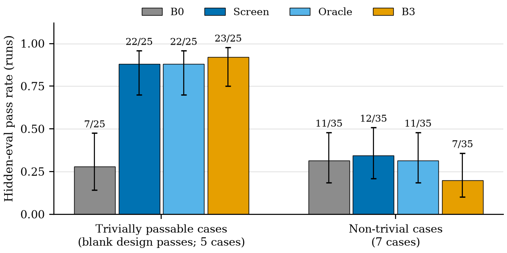
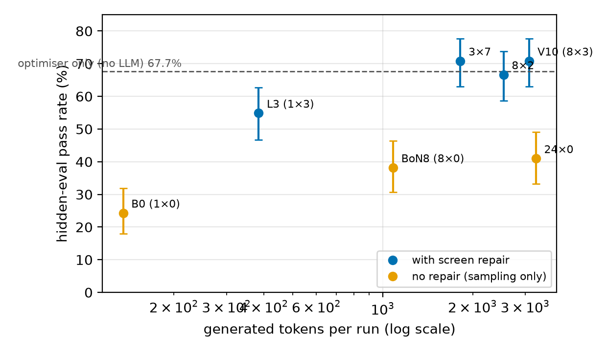
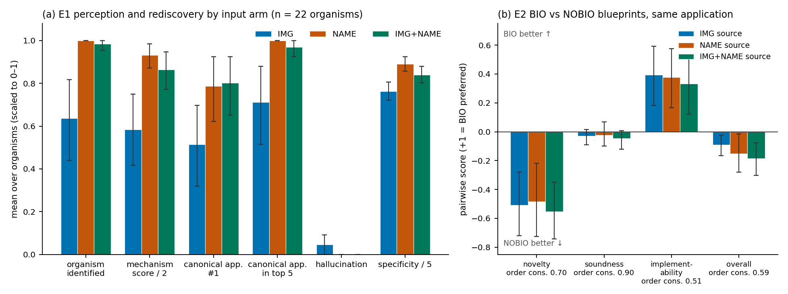
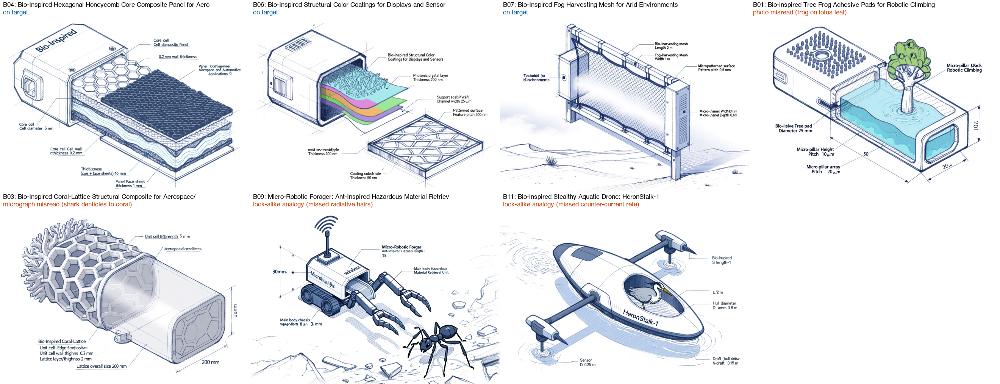
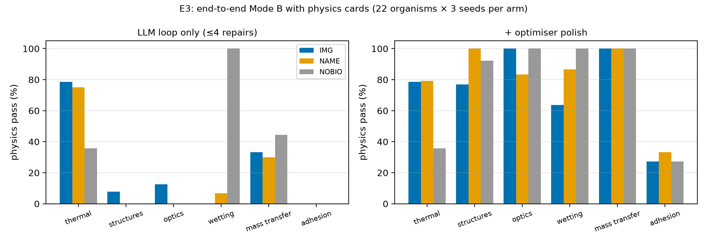

Research proposal with preliminary results (FLBDS V11). Supersedes the V10 revision of “Physics-Verified Bio-Inspired Concept Generation from Biological Images”.
20 November 2026 · draft for supervisor discussion (incorporates design decisions D1–D7, §9.1)
Bio-inspired design (BID) transfers a working principle from an organism to an engineering problem. Language models can now propose such transfers cheaply, but the systems that do so are text-only, check no physics, and are evaluated by a handful of human raters. This proposal describes FLBDS V11, a system that starts from an organism image, infers structures, scales and mechanisms, maps them through explicit physical-effect tags to existing engineering problems, designs a concept that is checked by closed-form physics models across several domains, and returns a blueprint: a structured description, a dimensioned schematic generated from the verified parameters, and an illustrative rendering. Its claim is deliberately biology-first: biological structures seen in images can lead to designs that are better than, or at least as good as, designs produced without biology, provided the transfer respects scale and regime. The previous revision (V10) audited the earlier system and found that its headline result, a doubling of pass rate under physics feedback, was an artefact of answer leakage and blank-passable cases. On 48 solver-certified thermal-fluid instances the corrected loop does help (+30.6 points over one shot with Qwen2.5-72B, Holm p = 3×10−5); depth beats breadth in compute allocation (3 samples × 7 repair turns: 70.8% against 41.0% for 24 independent samples); and a matched biology card had no measurable effect (+2.8 points over a mismatched card, Holm p = 0.56) because every V10 family admitted only one mechanism. V11 responds by moving biology to where it can matter: the choice of mechanism and problem. It adds an image-driven perception stage, a licence-clean mechanism-card store chosen instead of a knowledge graph, a library of real engineering problems across seven physical domains, new physics cards for structures, adhesion, wetting, optics and fog harvesting, and a blueprint stage. Because the project has a single researcher and no human raters, all evaluation is automatic: physics checks, rediscovery of 24 canonical cases, image-versus-name ablations, position-controlled pairwise judging of bio and no-bio blueprints by a separate open model, bio-faithfulness scores, and negative controls. A first image pilot (22 canonical organisms, one unscreened photo each, Qwen3-VL-32B generator, Qwen2.5-72B judge) gives a sobering but useful picture. On these famous organisms a photo alone is worse than the name: the organism is identified in 64% of photo-only runs against 100% from the name, and the canonical application is ranked first in 52% against 79%; adding the photo to the name does not help. A BioCLIP 2 identification stage ranks the right taxon first for 19 of 22 photos on a closed list of 54 names. Identification is the bottleneck, yet in 42% of misidentified runs the photo still led to the canonical application, so some structure-to-function inference from pixels exists. Blueprints built from the biological source are judged as sound as no-biology blueprints for the same application and more implementable, but less novel (pairwise −0.48 to −0.55 on a −1…+1 scale), because canonical biomimicry is already established practice. End to end with physics cards (11 cards, 23 real problems, six domains chosen), biology does not change how often designs pass (24%, 35% and 30% for photo, name and no biology; no significant difference) but does steer which mechanism is chosen (the organism's own card in 41–57% of runs against 33% without biology), and the physics check catches a look-alike transfer (lotus-scale texture failing rain impact). With an optimiser setting the numbers, pass rates rise to 73–82%, equal for bio-led and no-biology concepts. We therefore fix the design for the next phase. The language model chooses the mechanism, the problem and the physics card; an optimiser sets the numbers. A licence-clean mechanism-card store replaces the knowledge graph, which is kept only as a later ablation. A parametric schematic drawn from the verified numbers is the authoritative design image, and the generated render is illustrative. The image claim is reframed: an image is the entry point of Mode B and a source of structure-to-function cues; whether it adds information beyond the organism's name is tested where memory is weak (less-famous organisms and micrographs as the primary benchmark, several photos, a BioCLIP 2 identification stage); and novelty is measured against prior art (patents and papers) rather than by a judge's sense of standard practice. We state six research questions with hypotheses, tests and go/no-go criteria and give a plan to April 2027.
Keywords: bio-inspired design; vision-language models; design-by-analogy; physics verification; automatic evaluation; blueprint generation; rediscovery benchmark.
Status labels. measured marks a number computed from stored project results (V10 findings log and result files). built marks code or data that exists in the repository but has not yet been validated or used in a reported experiment. planned marks work that has not been done. Literature facts come from the project's research notes; items the notes mark as recalled from memory rather than checked are flagged with K and should be read as “to verify” (footnote in §1). “Physics-checked” means passes closed-form or 1-D engineering models within declared validity regimes; it is code verification, not validation against experiment [81].
Engineers have borrowed from organisms for a long time, and the practice is growing. Biomimetics publications rose from fewer than 100 a year in the 1990s to several thousand a year in the 2000s [48], and biomimetic patenting follows a sigmoid technology-growth curve [49]. The best argument that biology is worth searching is not volume but difference. A TRIZ-based comparison of biological and technical solutions found that biology solves problems mainly through structure and information, engineering mainly through energy and substance, with only about 12% overlap in inventive principles [22]K. If that is roughly right, biology is a partly non-redundant solution space, and a system that searches it can reach mechanisms an engineer would not reach by searching engineering alone.
The controlled evidence that biological stimuli improve design is positive but modest. In a three-arm study, biological examples raised idea novelty without lowering variety, while engineered examples lowered variety, a sign of fixation [42]. Across four studies with 61 participants in 16 teams, concepts made with biological “biocards” had higher average novelty than brainstormed ones (Wilcoxon W = 30, p = 0.051), but the share of highly novel concepts did not differ [43]. A study with 12 designers found a significant gain in variety but not in novelty, quality or quantity [44]. Distance matters: in OpenIDEO data, conceptually nearer sources predicted shortlisted concepts [45], and stimuli that are too far can lower quality [46], so “far is better” is not a safe assumption. The defensible claim is that biology is a reliable source of distant, non-fixating stimuli, not a guaranteed quality booster.
Canonical successes also need care. Optimised riblets reduce turbulent skin friction by up to 9.9% [50], but only within a narrow spacing window, and a commercial “sharkskin” swimsuit showed no consistent speed gain [51]. A gecko-inspired adhesive reached 2,950 N of reversible force capacity through a tendon-and-fabric design derived from scaling theory rather than by copying fibrils [52]. Leading-edge tubercles modelled on humpback flippers delayed stall by about 40% in a wind tunnel [53]. Lotus leaves reach water contact angles near 160° [58]. Several famous analogies rest on wrong biology: termite mounds are ventilated by diurnal temperature oscillation, not the steady stack effect assumed for the Eastgate Centre [54]; Namib beetle elytra contribute little to fog collection compared with behaviour [55]; boxfish carapaces are destabilising, not self-stabilising [56]; woodpecker heads act as stiff hammers rather than shock absorbers [57]. Two lessons follow for an automated system. Transfers must be checked against the physics of the target regime, not the authority of the biological story. And a good system should be able to reject a folk analogy.
Existing language-model BID systems link biology and engineering through text: fine-tuned or retrieval-augmented models over papers and AskNature-style strategy descriptions [1–5]. A text description of an organism already encodes someone's interpretation: which structure matters, at what scale, for what function. An image carries the raw morphology, including features nobody wrote down: hierarchical texture, aspect ratios, arrangement, the relation between structure and environment. Our working hypothesis is that a capable vision-language model (VLM) can infer more design-relevant structure, scale and morphology from an image than from a name alone, and that this can lead to designs that are better or at least equivalent. The evidence that this is true for design is absent rather than negative. No study isolates the image's contribution to design outcomes; on microscopy questions, naively written items were answerable without the image at 93% by GPT-4o, so apparent multimodal gains can be text shortcuts [33]. VLMs are fairly reliable at coarse identification and trait presence but poor at localising, counting and measuring traits (trait grounding 8.1–29.4% for GPT-4V) [31], and they fail at quantitative geometric estimation in engineering drawings [26]. An image pathway is therefore worth building only with a name-only ablation, with scale taken from text or literature rather than from pixels, and with the physics stage as the arbiter of whether an inferred mechanism can work. The pilot in §8.2 confirms the first caution: on famous organisms the name alone already recovers the textbook transfer, and the photo helps only once the organism is identified.
Table 1 compares the closest systems. None combines organism-image input, a physics check and a design-image output. Cephalo reasons over micrographs and photographs but is evaluated qualitatively [6]. Bioinspired123D emits parametric Blender geometry checked by a VLM critic, but its input is text and its check is geometric, not physical [7]. BioSpark uses images only for display [1]. CADCodeVerify supplies the evaluation pattern (render, ask questions, repair) but has no biology [24].
Table 1. Closest related systems (from research note 01, Q5). “Physics check” means a check of the physical function of the design, not only geometry validity.
| System | Year / venue | Image input | Physics check | Design-image output | Evaluation |
|---|---|---|---|---|---|
| Cephalo [6] | 2024, Adv. Funct. Mater. | Yes (micrographs, photos) | No | Generated microstructure images | Qualitative case studies |
| Bioinspired123D [7] | 2026, preprint | Renders only, for VLM critic | No (geometry validity) | Yes (Blender 3D) | Script benchmark; ~4× over base |
| BioSpark [1] | 2025, CHI | Display only | No | No | N = 12 users; one expert rater |
| BioinspiredLLM [5] | 2024, Adv. Sci. | No | No | No | Knowledge-recall QA |
| BIDARA [4] | 2024, AAAI-SS | No | No | No | Rated feasibility with/without RAG |
| AskNatureGPT [3] | 2026, J. Eng. Des. | No | No | No | Case studies / ratings |
| Zhu–Luo GPT BID [2] | 2023, J. Mech. Des. | No | No | No | Case study + classifier |
| BARcode [8] | 2024, AAAI | No | No | No | Rediscovery of historical BID |
| CADCodeVerify [24] | 2025, ICLR | Renders, for self-check | Geometric only | Yes (CAD) | CADPrompt (200 objects) |
| Sketch2Prototype [27] | 2024, DESIGN | Hand sketch | Manufacturability heuristics | Yes (image → 3D) | Diversity, manufacturability |
| Picard et al. [26] | 2025, AI Review | Yes | Tests VLMs on DfM, topology opt. | Partly (CAD) | >1,000-query benchmark |
| Jiang–Luo [10] | 2021, J. Mech. Des. | Patent drawings | No | No (retrieval) | Retrieval accuracy |
| FLBDS V11 (target) | 2026–27 | Organism photos (later micrographs) | Closed-form, 7 domains | Parametric schematic + render | Automatic: physics, rediscovery, ablations, judges |
V10 cut the original system down to the parts with evidence and found that, on single-template thermal families, an optimiser told the right template needs no language model and a biology card changes nothing (§3). The author's goal for the project is different from what V10 could test: good biological-to-engineering design analogies, rooted in sound design, that should actually work. V11 therefore keeps V10's verified design loop and rebuilds the front of the pipeline around biology:
K To verify: these facts are cited in research note 03 from memory of the primary paper and were not re-checked when the note was compiled (20 Nov 2026). They are used here only as context, not as evidence for any design decision, and will be checked against the primary sources before submission.
The mainstream LLM BID line is text-only. BioinspiredLLM fine-tunes a 13B model on about 1,000 papers on biological materials and is evaluated by knowledge-recall questions (82% on a 100-question exam), not design quality [5]. BIDARA follows the Biomimicry Institute design spiral with retrieval and ReAct agents and reports that retrieval raised rated feasibility [4]. AskNatureGPT fine-tunes GPT-3.5 on solution–problem–innovation triples [3]. Zhu, Zhang and Luo fine-tune GPT-3 generators for BID concepts and note infeasible numbers as a failure [2]. BioSpark expands AskNature mechanisms with GPT-4 along a tree of life; in a within-subjects study with 12 participants it doubled ideas (10.3 vs 5.5) and raised expert-rated novelty (7.1 vs 3.9) but lowered feasibility (5.7 vs 6.8), against an AskNature-plus-ChatGPT baseline [1]. BARcode mines Wikipedia species articles for bio-strategy sentences and recovers 4 of 5 famous biomimicry examples [8]. GPT-4o mining of 74,359 biomimetics papers found a strong bias toward a narrow set of animal taxa [11]. Most models also systematically undervalue biological relative to synthetic solutions, a bias that fine-tuning on PMC articles shifts [41], which matters for a biology-first system built on general models. LLM-generated design solutions are also measurably less diverse than human ones [82]. Across this literature, gains are rated, not executed, and ratings of LLM ideas drop sharply once ideas are executed [36].
Only a few systems take images as reasoning input. Cephalo fine-tunes VLMs on image–caption pairs from scientific papers and demonstrates pollen-inspired architected materials, qualitatively [6]. Jiang and Luo retrieve near and far patent drawings with CNN features for design-by-analogy [10]. Picard et al. benchmark GPT-4V and LLaVA on more than 1,000 engineering-design queries and find failures on complex drawings, accurate CAD and volume-fraction estimation [26]. For organisms, VLM4Bio shows good species multiple-choice accuracy (GPT-4V 82.6% on birds) but weak open-ended naming (17.4%) and near-chance trait grounding, and a strong tendency to accept a suggested wrong answer [31]. BioCLIP 2, trained on 214M images over 952K taxa, is the strongest open species identifier and is MIT-licensed [32]; specialist encoders plus VLM re-ranking of their top-k outperform VLMs alone [68]. MicroVQA shows that perception causes half of the errors on expert microscopy questions and that text shortcuts must be removed before an image's value can be measured [33]. No benchmark tests mechanism or function inference from organism images, and none tests scale estimation.
Research note 02 asked which way of integrating biological knowledge has measured design gains. No published BID knowledge graph has shown a controlled improvement over the same LLM without the graph. The Buehler-lab graphs (12k–33k nodes from about 1,000 papers) are evaluated by graph statistics, case studies and LLM self-scores on five ideas [13, 14]; a 2026 cross-domain KG-RAG reports one case study without an LLM-only ablation [16]. The outcome evidence that does exist favours function- and mechanism-indexed retrieval: BARcode's strategy precision@7 was 0.718 against 0.357 for Elasticsearch [8]; purpose–mechanism facets beat baselines by 50–60% in search accuracy and inspiration quality [9]; RAG over 2,106 strategy documents beat an LLM alone in most design-spiral stages, although a small corpus did worse [21]. Hand-built SAPPhIRE models showed large gains in a study with 6 designers per arm [15]. In general-domain comparisons GraphRAG helps on multi-hop and global questions, while plain retrieval is equal or better for single-fact lookup [17–19], and reported GraphRAG gains shrink or reverse once judge order and question bias are controlled [20]. The lookup FLBDS needs (“which mechanism serves this function in this regime?”) is single-hop.
Code-as-geometry is the route to checkable design images. Text2CAD generates CAD construction sequences from about 660K text prompts [23]; CAD-Recode maps point clouds to CadQuery code [25]; DeTikZify turns sketches into TikZ programs [28]; StarVector produces SVG code and argues that pixel metrics suit vector graphics poorly [29]. CADCodeVerify renders generated CadQuery, has a VLM ask and answer verification questions, and feeds the answers back, improving point-cloud distance and compile rate [24]. Sketch2Prototype chains sketch, text, image and 3D model to a fabricated prototype [27], and text-to-image models have been used to explore soft biomorphic robot designs, qualitatively [12]. For image–text consistency, VQAScore outperforms CLIPScore on compositional prompts [30]. The practical lesson for FLBDS is to draw the authoritative schematic from the same parameter dictionary the physics check uses, so that consistency holds by construction, and to use a VLM only for semantic read-back, never to judge dimensions [26].
Intrinsic self-correction does not reliably help; external feedback does when it is informative [59, 60], and at matched compute the gain from repair is modest relative to diverse sampling in code generation [61]. In simulator-grounded design, feedback doubles to triples single-shot success before plateauing [62], and with an automatic verifier, coverage from repeated sampling grows roughly log-linearly [78]. Feedback loops also drive in-context reward hacking against the proxy [63], so a cheap screen is safe only if it is a relaxation of the final scorer [64]. LLM-plus-classical-optimiser hybrids consistently beat pure LLM tuning of numbers [77]. V10 measured these effects for FLBDS directly (§3).
LLM judges of research-idea novelty agree with human top/bottom splits at about chance (45–53% pairwise against 56% between humans) [35]. A strong VLM judge of design sketches reached expert-level equivalence for uniqueness and drawing quality but not for usefulness, the feasibility-like criterion, and expert–expert agreement was itself only κ/ICC 0.26–0.59 [34]. A panel of smaller judges from different model families agreed with humans better than a single large judge on QA correctness, with less self-preference [37]. Reliable automatic signals, in decreasing order, are therefore: verifiable checks; rediscovery of held-out known solutions, as in MOOSE-Chem's 51-paper chemistry benchmark [38] and BARcode [8]; embedding-based novelty against prior art, for which PaECTER is a patent-specific candidate [39]; and multi-family judge panels for semantic criteria only. Citation support from LLMs is incomplete about half the time [40], so mechanism claims need verbatim evidence. No validated automatic feasibility judge exists for engineering concepts; physics checks fill that role in FLBDS.
This section compresses the V10 revision of this proposal (FLBDS V10, 20 November 2026, 28 pages) to what V11 builds on. Full tables are in §8.1.
The original proposal's motivating pilot reported that feeding back physics-check failures roughly doubled Qwen2.5-72B's pass rate on 12 hand-authored development cases (Round 11: 18/60 to 34/60). An audit of the code and stored runs found twelve defects. The most consequential were two routes by which the hidden list of acceptable templates reached the model (7/60 Screen and 7/60 Oracle runs saw it, and 6 of each then passed; the full-pipeline arm read its template from hidden ground truth in 50/60 runs), schema defaults that silently filled omitted design fields, and a case scored against a specification its own reference design fails. A design containing nothing but the template identifier passed the hidden scorer on 5 of the 12 cases. On the 7 cases a blank design cannot pass, feedback added +2.9 points (11/35 vs 12/35; sign-flip p = 1.0) measured. The claimed effect was template selection on trivially passable cases, and it was withdrawn, as were the claims for the operator layer and for an image path that did not exist (Figure 1).

docs/v10/e0_results/.V10 replaced the hand-tuned cases with a generator: 48 instances in four thermal-fluid families (phase-change storage PCM, counter-current heat exchanger HX, radiative cooling RAD, plastron membrane MEM), each certified satisfiable by differential evolution against the hidden scorer and rejected if more than half of 200 random designs passed. Every design field is required, the environment always comes from the instance, and the in-loop screen returns per-constraint achieved value, limit and normalised margin but never the answer measured. A relaxation audit on 2,000 designs per family showed that the screen is not a relaxation of the hidden scorer on two families: PCM had 112 false assurances because the scorer enforces a latent-capacity bound the screen lacks; RAD had 91 false rejections and 105 false assurances because the two tiers test different constraints. It also found an unstable 1-D enthalpy solver that returns garbage which still passes when the effective Fourier number exceeds 135 (about 31% of random PCM designs). These are the kinds of physics-layer defects V11's new cards must be tested for before use.
With Qwen2.5-72B on the 48 certified instances (3 seeds, 144 runs per arm), three screen-repair turns beat one shot by +30.6 points (54.9% vs 24.3%, Holm p = 3×10−5); on the 12 old dev cases rerun with the corrected harness the gain is +35.0 points (Holm p = 0.016), so feedback does help once nothing leaks. Depth beats breadth: 3 samples × 7 repair turns pass 70.8% at 1,820 tokens per run, against 41.0% for 24 independent samples at 3,258 tokens. Seeding an optimiser with the LLM design adds +11.1 points at 72B (not significant) and +22.9 at 7B (Holm p = 0.018), and the same optimiser told the template without any LLM does as well (paired +1.7 points, p = 0.44). A matched biology card had no effect (+2.8 points over a mismatched card at 72B, Holm p = 0.56; −2.1 at 7B) measured. Details are in §8.1 (Tables 7–8, Figures 5–6).
Five consequences shape V11. (i) The design loop works and its settings are known: keep 3 samples × up to 7 screen-repair turns, then optimiser polish. (ii) A verifier must be audited as a relaxation of whatever it stands in for, or the loop will optimise into its blind spots. (iii) Biology cannot change outcomes when each problem admits a single mechanism; V10's null biology result is a property of the benchmark, not evidence against biology. Biology must act on which mechanism and which problem, which requires choice-sensitive problems with several plausible mechanisms of which only some are feasible. (iv) Thermal-fluid templates alone cannot represent the canonical BID cases (adhesion, wetting, structural colour, lightweight structures, fog collection). (v) An image path, a problem selector (Mode B) and a design output must be built and measured, not assumed. The V10 biology card for PCM also described evaporation (elephant skin) rather than latent storage, a reminder that mechanism cards need verbatim evidence.
V11 is biology-first, image-driven and physics-checked. Figure 2 shows the two tracks and where they meet. The biology track turns pixels into structures, scales and mechanisms; the engineering track holds real problems and physics models. They converge on a shared vocabulary of physical-effect tags (thermal, fluids, structures, adhesion, wetting, optics, mass transfer) and on physics cards, each of which states a working principle, its design and environment variables and the dimensionless window in which it is valid. Biology is therefore not decoration on an engineering design: a perceived mechanism selects the card, the card selects the problems it can serve, and the card's regime check decides whether the transfer survives the change of scale.
Mode B is the primary mode: the input is one or more organism images and, optionally, a caption. The system decides which engineering problems the organism's mechanisms could improve. Mode A adds a plain-language problem with numeric requirements; the system then lists the cards that could serve it and asks whether the organism's mechanism maps onto one of them. The pilot runs Mode B only, with one photograph per organism.
Perception separates identification from interpretation, following the evidence that specialist encoders identify species far better than general VLMs and that VLMs are suggestible [31, 32, 68]. The pilot shows that this split is necessary: from a photo alone the VLM identified the organism in only 64% of runs, and rediscovery collapsed when it did not; BioCLIP 2 on a 54-name closed list placed the right taxon first for 19 of 22 photos and in the top five for 21 (§8.2, E1b). BioCLIP 2 will rank the organism against a closed list (the organisms that have mechanism cards) and pass its top-5 to the VLM, with an abstain option below a similarity threshold planned. The VLM (Qwen3-VL-32B-Instruct-FP8) returns structured JSON: the organism guess with confidence; visible structures, each with a description, a scale estimate in metres and a flag for whether it is visible in the image or inferred; biological functions; mechanisms, each with the physical principle, a physical-effect tag and the evidence for it; and five candidate engineering applications, each with the problem it solves, a biological-to-engineered feature mapping and a physical reason including scale or regime pilot. Scale estimates from pixels are treated as hypotheses: the design stage takes length scales from the mechanism card or the literature, not from the VLM [26, 31].
The original proposal planned a knowledge graph with a learned encoder and re-ranker. V11 replaces it with a small mechanism-card store, for three reasons drawn from §2.3. No BID knowledge graph has shown a measured design gain over the same LLM without it [13, 14, 16]. Function- and mechanism-keyed retrieval is the one representation with measured gains [8, 9, 21]. And the lookup the system needs is single-hop, where plain retrieval matches or beats graph retrieval [18, 19]. Each card records the organism (with GBIF and Wikidata identifiers), the structure and its length scale, the mechanism, the physical-effect tag, the target physics card, the operating regime as ranges of dimensionless groups, and one to three verbatim quotes with DOI and article licence. Cards are drafted by an LLM from PMC Open Access articles in the commercial-use subset and accepted only if every quote string-matches its source, which addresses the roughly 50% citation-support failure rate of LLMs [40] planned. The card store is the only “graph” V11 needs: a bipartite table from mechanism to effect tag to physics card. A graph remains an optional later ablation if retrieval recall on held-out organisms shows that multi-hop chains are needed.
The effect tag and mechanism from Stages 1–2 select candidate physics cards; each card lists the problems in the library it can address. In Mode B the system ranks problems by mechanism fit (does the card's principle match the perceived mechanism?) and regime feasibility (does the problem's environment fall inside the card's validity window, and does the problem's feasibility certificate say the card can meet the requirement?). In Mode A the problem is fixed and the system lists plausible cards. Biology is weighted heavily by construction: a design is accepted only with a mapping table listing each biological feature, the engineered feature it becomes and the scale change between them. The scale gate is the part of V9's operator idea that survived the audit: a deterministic check of the dimensionless groups that make a mechanism work, for example the riblet spacing in wall units, the Bond and capillary numbers for droplet transport, or the contact size relative to the JKR length for fibrillar adhesion. A gecko seta and a climbing-robot pad share the van der Waals principle only if the fibril dimensions stay inside the regime where contact splitting helps; adhesive-pad size itself scales with body size across animals [79], so scale is part of the mechanism. In E1/E2 this stage is free text (the VLM's five applications); in E3 the model chose a library problem and card directly, picking the organism's own gold card in 41–57% of runs against 33% without biology, but inventing card names in about 13% of runs, so the choice will be constrained to the registry with structured output pilot. Scored ranking of problems is planned.
Stage 4 divides the work between the model and an optimiser, as V10 and E3b both indicate. The LLM chooses the mechanism, the problem and the card (from the registry only) and proposes a first design with every parameter; missing or out-of-bounds fields are schema errors, never defaults. A classical optimiser then sets the numbers: in E3, LLM-only repair passed 24–35% of runs and failed almost all tight new-domain cards, while optimiser polish of the same choices raised the pass rate to 73–82% (§8.5). The card's screen() returns, for each constraint, the achieved value, the limit, the sense, the signed normalised margin and PASS or MISS, plus regime notes and derived quantities for the blueprint (interface in docs/v11/INTERFACES.md). The allocation is the best measured in V10: 3 independent samples, each with up to 7 repair turns, best by minimum margin, then a differential-evolution polish seeded from the best design. Where an independent scorer exists (the four V10 families) it scores the final design once. For the new cards the screen is the only check at first, so each card must pass three audits before its results count: a relaxation audit against a higher-fidelity model or published data where one exists, a regime audit (designs outside the validity window must fail), and metamorphic tests (for example, thicker face sheets must not lower panel stiffness). The cards are closed-form and cite their equations, for example Bechert et al. and García-Mayoral and Jiménez for riblets [50, 80], JKR contact and contact splitting for fibrillar adhesion, Cassie–Baxter wetting with an impalement-pressure check, quarter-wave multilayer theory for structural colour, and the Rivera and Park et al. collection-efficiency models for fog meshes built today.
The output is a concept blueprint: less than a manufacturing drawing, enough for an engineer to understand and implement the idea. Figure 3 shows its anatomy. Every numeric field has a provenance. Dimensions and verified performance come from the physics card's accepted parameter set and screen() output; text fields (summary, materials, steps, limitations) come from the LLM and are checked for completeness; the parametric schematic is drawn programmatically from the same parameter dictionary by a per-card SVG template, so it cannot disagree with the numbers, and it is the authoritative design image (decision D5); the Qwen-Image render is an illustrative concept view and is labelled as such. A VLM then reads the schematic and render back and answers generated questions (“does the drawing show a hexagonal core between two face sheets?”), in the manner of CADCodeVerify [24], giving a sketch–description consistency score. In the pilot the blueprint is LLM-generated JSON with a self-reported “quick physics check” and an optional render; it is not yet tied to a physics card pilot.
Every evaluation signal is automatic and uses open-weight models that run on the project's server. Physics checks carry feasibility, because model judges are weakest on exactly that criterion [34]. Rediscovery of canonical cases measures whether perception and analogy find the known mechanism and application. Ablations by input arm (image, name, both) measure the image's information value, with the name-only arm controlling for text shortcuts [33]. Pairwise comparison of bio-sourced and no-biology blueprints for the same application is judged by a different open model in both presentation orders, with order consistency reported. A separate rubric scores how faithfully a blueprint uses its biological source. Negative controls (cases with wrong folk biology) test whether the system repeats bad analogies, and prior-art nearest-neighbour similarity to patents and papers is planned as a novelty signal [39]. §7 gives the protocol and §10 its limits.
Table 2. V11 design decisions with the evidence behind them. Keep = carried over from V10; Replace = V9/V10 component replaced; New = added in V11.
| Component | Decision | Evidence |
|---|---|---|
| Screen with per-constraint margins; repair loop | Keep | +30.6 points over one shot at 72B, +35.0 on dev cases once leaks fixed (§3.3) [measured]; external informative feedback helps [60, 62] |
| Allocation 3 samples × ≤7 repairs | Keep | 70.8% vs 41.0% for 24 × 0 and 66.7% for 8 × 2 at fewer tokens (§8.1) [measured] |
| Optimiser sets the numbers | Keep, promote | +22.9 points at 7B; optimiser alone matches LLM+optimiser once template is given (V10); E3b: 24% → 73% (IMG), 30% → 73% (NOBIO) across 6 domains [measured]; hybrids beat pure LLM tuning [77] |
| No schema defaults; environment from problem; firewall | Keep | Defaults and answer leaks produced the V9 artefact (§3.1) [measured] |
| Relaxation and regime audits per card | Keep, extend | PCM and RAD screens were not relaxations; unstable solver passed garbage (§3.2) [measured]; reward hacking under feedback [63] |
| Knowledge graph + encoder + re-ranker (V9 M3) | Replace; KG kept only as a later ablation arm (D4) | No measured BID-KG gain over same LLM [13, 14, 16]; single-hop lookup favours plain or faceted retrieval [8, 9, 18, 19] |
| Mechanism-card store with verbatim quotes | New | Function/mechanism indexing has measured retrieval gains [8, 9]; LLM citations unsupported ~50% of the time [40]; V9 silver cards: 51/53 “biology” cards described engineered materials |
| Operators T1–T5 (V9 M4) | Replace by scale/regime gate | Operators fired on 2/12 cases and lost to the plain loop (6/10 vs 9/10) [measured]; regime-bound effects are real [50, 51, 53] |
| Image perception (VLM) + BioCLIP 2 front end | New | Pilot: VLM photo-only identification 64%, and rediscovery hit@5 0.42 when misidentified vs 0.88 when identified; BioCLIP 2 closed-list top-1 19/22, top-5 21/22 [measured]; BioCLIP 2 strongest open identifier [32]; specialist + VLM re-ranking [68] |
| Name-only and IMG+NAME arms | New | Text shortcuts can explain apparent multimodal gains [33] |
| Problem library (Mode B selection) | New | V10 biology null: single-mechanism families leave biology nothing to decide [measured]; biology differs in mechanism choice [22]K |
| Multi-domain physics cards | New | Canonical BID cases are in structures, adhesion, wetting, optics, fog collection (Appendix A) |
| Parametric schematic (authoritative) + render (illustrative) + read-back | New (D5) | Code-as-geometry is checkable [23–25, 28]; VLM render QA improves CAD [24]; VLMs must not judge dimensions [26] |
| Separate-model pairwise judge, both orders | New | Judge position bias can reverse conclusions [20]; panels reduce self-preference [37]; LLM novelty judging near chance [35]; pilot order consistency only 0.51–0.70 on implementability, overall and novelty [measured] |
| Prior-art novelty (patents, papers) | New, promoted | Pilot: judged novelty “vs standard practice” penalises canonical biomimicry (−0.48 to −0.55) [measured]; PaECTER patent embeddings [39] |
| Human raters | Excluded | Solo researcher; replaced by physics checks, rediscovery and controls (§10 discusses the cost) |
V11 needs data on both sides of the analogy: organisms with images, mechanisms and evidence on the biology side, and real problems, physics models and prior art on the engineering side. Tables 3 and 4 list every dataset with its size, licence, role and status as of 20 November 2026 (source: docs/v11/DATASETS.md). Status: IN USE in the 20 November pilot; HAVE on disk but not yet used in V11; PLANNED; EXCLUDED. Server paths are under the project's home directory on the department H200 server. Licence policy: only CC0, CC BY, CC BY-SA, public-domain or project-authored material is ingested; non-commercial sources are excluded so that derived cards and benchmarks can be released.
Table 3. Biology-side datasets.
| # | Dataset | What it is | Size | Licence | Role in V11 | Status |
|---|---|---|---|---|---|---|
| B1 | V11 canonical organism set (flbds/v11/data/organisms.json) | Hand-curated textbook biology→engineering cases: organism, key structure, mechanism, physical-effect tag, canonical application, target card | 24 cases (19 with a card; 5 without: kingfisher, burdock, humpback, penguin, mussel) | Project-authored | Ground truth for rediscovery | IN USE |
| B2 | Organism photos (flbds/v11/data/images/) | One photo per case: first CC/PD hit from a Wikimedia Commons search; unscreened | 22 images (gecko rate-limited; humpback no licensed hit) | CC BY / BY-SA / CC0 / PD; author and page per image | VLM input in the IMG arms | IN USE |
| B3 | Extended rediscovery table (research note 03) | 28 canonical cases incl. 2 negative controls, claimed vs measured performance | 28 rows (some need source checks) | Literature-derived | Expand B1 to ~60–100; negative controls | PLANNED |
| B4 | iNaturalist research-grade photos | Community photos with expert-verified IDs | 3–5 per organism | Keep only CC0 / CC BY [73] | Several views and scales per organism; robustness | PLANNED |
| B5 | Micrographs / SEM figures from open papers | PMC OA figures of the functional microstructure (setae, denticles, wax tubules, lamellae) | 1–3 per organism | CC BY only | Do microscale images add what field photos cannot? | PLANNED |
| B6 | BioCLIP 2 | Biology CLIP model trained on TreeOfLife-200M | 3.2 GB weights | MIT | Closed-list taxon ID and re-ranking before the VLM | HAVE |
| B7 | PMC biology pilot corpus | 500 PMC CC BY biology papers | 500 docs | CC BY | Source of the V9 silver-card factory | HAVE (51/53 “biology” cards were engineered materials) |
| B8 | Silver mechanism cards (V9) | LLM-extracted cards with verbatim quotes and linked quantities | 133 cards | Derived from B7 + patents | Seed for B10 after re-filtering to real organisms | HAVE |
| B9 | Foundation + audited papers | Elephant skin, rete mirabile, silver ant, plastron papers + 10 audited PMC papers | 15 papers | Mixed open access | Gold evidence for the V10 families' cards | HAVE |
| B10 | Mechanism card store (V11) | Organism, structure with scale, mechanism, effect tag, verbatim quotes, source | 60–150 cards | Derived from B11–B13 | Retrieval for Modes A/B; replaces the KG | PLANNED |
| B11 | PMC Open Access, commercial-use subset (BioC API) | Full text retrieved by taxon + function keywords [69] | On demand | CC BY / CC0 (licence field) | Mechanism evidence for B10 | PLANNED |
| B12 | OpenAlex [70] | Scholarly metadata, abstracts, citations | 250M+ works | CC0 | Literature search, prior-art lookups | PLANNED |
| B13 | Wikidata + GBIF backbone [71, 72] | Taxon names, synonyms, common names, hierarchy | — | CC0; CC BY 4.0 | Name normalisation; genus/family-level ID scoring | PLANNED |
| — | AskNature [74] | Curated biomimicry strategies | ~2,100 entries | Terms forbid data mining / redistribution | Manual pointer to primary papers only | EXCLUDED |
| — | S2ORC [75] | Full-text corpus | 81M papers | Non-commercial | — | EXCLUDED |
Table 4. Engineering-side datasets.
| # | Dataset | What it is | Size | Licence | Role in V11 | Status |
|---|---|---|---|---|---|---|
| E1 | Physics templates, thermal-fluid (flbds/physics/, wrapped in flbds/v10/) | Cited closed-form screens + coupled solvers: PCM storage, counter-current HX, radiative cooling, plastron membrane, evaporative cooling, wicking (+4) | 10 templates (~2,400 lines) | Project code | Physics check for thermal / fluid / mass-transfer designs | IN USE (V10); known bugs: PCM solver, RAD scorer |
| E2 | Physics cards, new domains (flbds/v11/cards/) | Closed-form cited models: honeycomb sandwich, lattice/truss, riblet drag, fibrillar adhesion, superhydrophobic wetting, Bragg structural colour, fog-harvest mesh | 7 new + 4 V10 wrappers (11 registered) | Project code | Physics checks for structures, adhesion, wetting, optics, fog harvesting | BUILT today (65 tests pass); relaxation audits pending |
| E3 | V10 certified benchmark (flbds/v10/instances_v10.json) | Generated problems in 4 thermal families, certified satisfiable, rejected if too easy | 48 instances, sha256 788426ff…, canary | Project-generated | Measures the design loop | IN USE (V10) |
| E4 | V9 dev cases (flbds/benchmark/dev/) | Hand-written problem cards, 4 clusters × 3 splits | 12 | Project-authored | Regression only (5/12 blank-passable) | HAVE |
| E5 | V11 problem library (flbds/v11/problems.py) | Real problems (drone floor panel, hull drag, facade-climbing robot pads, desert PV cover glass, security film, fog collection, vaccine-store roof …) with numeric requirements and ≥1 plausible card; source per problem | 23 problems: thermal 5, structures 3, fluids 3, adhesion 3, optics 3, mass transfer 4, wetting 2 | Project-authored, each with a source | Mode B picks problems; Mode A supplies one; choice-sensitive problems test RQ4 | BUILT today |
| E6 | Problem feasibility certificates (flbds/v11/problem_feasibility.json) | Optimiser-found best design and minimum margin for every (problem, plausible card) | Per problem × card | Derived | Ground truth: which mechanisms can work for each problem | BUILT today (27/29 pairs feasible) |
| E7 | USPTO engineering patent pilot | 500 patents | 500 | Public domain | Novelty: nearest-neighbour similarity to patents | HAVE |
| E8 | Patent / prior-art index (scaled) | USPTO bulk text or Google Patents Public Data, embedded with an open text embedder [76] or PaECTER [39] | 10k–100k patents in target CPC classes | Public domain / CC BY 4.0 | Automatic novelty score | PLANNED |
| E9 | External engineering-design benchmarks | e.g. EngDesign, 101 tasks with executable checkers [67] | 101 | Benchmark licence | Optional external check of the loop | PLANNED (optional) |
State of the problem library. The certification of 20 November built covers 23 problems and 29 (problem, card) pairs, of which 27 are feasible; every problem has at least one feasible card. Six problems are choice-sensitive in the weak sense (two plausible cards: three thermal problems with radiative cooling or PCM storage, three structural panels with honeycomb or lattice cores). Only two of the six discriminate (P-THM-02, P-THM-03: exactly one of the two cards is feasible); on the other four both cards can meet the requirement. RQ4 needs problems where biology's choice matters, so the library must be extended with environments that make only some mechanisms feasible before RQ4 can be run (§9, P2).
The 24 gold cases (Appendix A) span seven effect tags: wetting (lotus, springtail, pitcher plant), adhesion (gecko, burdock, mussel), fluids (shark skin, kingfisher, humpback, horned lizard, xylem), structures (honeycomb, trabecular bone, giant water lily), optics (Morpho, jewel beetle), mass transfer (Namib beetle, diving bell spider, Opuntia spines) and thermal (silver ant, elephant skin, heron rete, termite mound, penguin plumage). Mechanisms and applications are textbook consensus; quantitative claims are deliberately left out of the gold file. The photographs were taken without screening, and several do not show the functional structure: the lotus image shows a juvenile frog in a drop on a leaf; the termite image shows a soldier of a different Macrotermes species, not a mound; the Morpho entry is a historical album drawing; the shark entry is a micrograph of lemon-shark denticles, not mako skin; the bone and xylem entries are an illustration and a micrograph respectively; the pitcher-plant photo is a different Nepenthes species with an ant; the mussel entry is a historical plate (Appendix B). This is a realistic Mode B input (an image found by someone else), but it confounds RQ1: an IMG-arm failure can mean the photo did not show the mechanism. The full study replaces these with screened iNaturalist photos and paper micrographs (B4, B5).
Table 5. Open-weight models, all run on the project's server (no API models).
| Model | Licence | Role | Status |
|---|---|---|---|
| Qwen3-VL-32B-Instruct-FP8 (vLLM) | Apache-2.0 | Perception, analogy, blueprint text | IN USE (pilot) |
| Qwen2.5-72B-Instruct-FP8 (vLLM) | Qwen licence | Design loop (V10); judge in the pilot | IN USE |
| Qwen2.5-7B-Instruct | Apache-2.0 | CPU scale contrast (V10) | HAVE |
| Qwen-Image (diffusers) | Apache-2.0 | Illustrative concept renders | IN USE (pilot) |
| BioCLIP 2 (open_clip) | MIT | Taxon identification | HAVE |
| Open judges from other model families; open text embedder | Open weights | Judge panel (PoLL-style) [37]; novelty and dedup embeddings [76] | PLANNED |
Each question has a hypothesis, a primary metric, a test and a go/no-go criterion fixed before the full study runs. The unit of inference is the organism (RQ1–RQ3, RQ6) or the problem instance (RQ4, RQ5); seeds are averaged within the unit. Tests are two-sided paired sign-flip permutation tests over units, 95% bootstrap intervals over units, and Holm correction over the confirmatory contrasts named in each question. Thresholds below are proposed preregistration values and may be revised only before the full-study data are generated.
RQ1 Image value (revised after the pilot). Does an organism image carry design-relevant information beyond the organism's name where the name does not already unlock memorised biomimicry?
Pilot finding: on 22 canonical organisms, IMG < NAME on every rediscovery metric and IMG+NAME ≈ NAME; identification from the photo (64%) is the bottleneck (§8.2). The first-draft H1 (IMG+NAME > NAME) is not supported there.
H1 (revised): (a) with a BioCLIP 2 identification stage (E1b: 86% top-1 on a 54-name closed list), photo-only identification reaches ≥ 85% at genus level on screened photos against a larger, open-world-like candidate list; (b) on less-famous organisms and on micrographs, IMG+NAME exceeds NAME on mechanism score and on downstream physics pass, without more hallucination; (c) conditional on misidentification, photos still yield the canonical mechanism above a name-shuffled baseline (structure → function inference).
Metrics: organism correct (GBIF-normalised), mechanism score (0–2), specificity, hallucination, downstream physics pass; scale accuracy against literature values (the pilot's scale-estimate count did not separate arms).
Test: confirmatory: IMG+NAME−NAME on mechanism score and on physics pass in the less-famous/micrograph stratum (Holm over 2); canonical stratum reported separately as a contamination reference.
Go/no-go: go if (b) holds with ≥ +0.15 mechanism score or ≥ +10 points physics pass and the interval excluding 0. If not, images are kept for identification and as a Mode B entry point, and the paper's image claim is limited to (a) and (c).
RQ2 Rediscovery. From an image alone (Mode B), does the system recover the canonical mechanism and application?
H2: In the IMG arm the canonical application appears among the top five proposals for at least half of the cases, and the mechanism is stated correctly (score 2) for at least half; on negative-control cases the system does not reproduce the folk explanation.
Metrics: hit@1 and hit@5 of the canonical application, mechanism score, genus-level identification; for negative controls, the rate of repeating the disproved mechanism.
Test: proportions with case-bootstrap intervals against two trivial baselines: the most common application for the case's effect tag, and a name-only contamination probe (“what is this organism famous for in engineering?”).
Go/no-go: hit@5 ≥ 0.5 in the IMG arm: proceed; below 0.3: perception is the bottleneck, add BioCLIP 2 top-5 and captions before any downstream claim.
RQ3 Biology vs no biology (revised after the pilot). For the same problem, are blueprints built from a biological source at least as feasible and sound as no-biology blueprints, and more novel relative to prior art?
Pilot finding: BIO ≈ NOBIO on judged soundness, BIO more implementable, but BIO judged less novel (−0.48 to −0.55) on canonical organisms whose transfers are established practice (§8.2). The first-draft H3 (“judged more novel”) is not supported there.
H3 (revised): BIO is non-inferior to NO-BIO on physics pass (lower 95% bound > −10 points) and judged soundness (> −0.10), and on less-famous organisms BIO blueprints are farther from their nearest prior-art neighbour (patents and papers, E7/E8) than NO-BIO blueprints for the same problem.
Metrics: physics pass under the card route; prior-art distance (primary novelty measure); pairwise judged novelty and soundness, both orders, multi-family panel (secondary); bio-faithfulness (1–5).
Test: case-level sign-flip; confirmatory: physics pass, soundness, prior-art distance (Holm over 3). NO-BIO receives the same library problem (not one derived from the organism) and an instruction matched in length and tone.
Go/no-go: if BIO is not non-inferior on physics pass in a domain, biology mapping is reported as harmful there and the regime gate is tightened before scale-up. If BIO is feasible but not farther from prior art, the paper claims equivalence, not innovation.
RQ4 Choice. On choice-sensitive problems, does a matched biological source steer the system to a feasible mechanism more often than a mismatched source, no source, or the same principle stated without biology?
H4: MATCH > NONE and MATCH > MISMATCH on the rate of choosing a feasible card; MATCH vs ENG-PARAPHRASE tells whether biology adds anything beyond the mechanism hint.
Metrics: primary: chosen card ∈ feasible set F(i) from the certificates (E6); secondary: end-to-end physics pass, margin, tokens.
Test: instance-level sign-flip; confirmatory: MATCH−NONE, MATCH−MISMATCH, MATCH−ENG-PARAPHRASE (Holm over 3). About 100 instances give 80% power for a 15-point difference at 30% discordance (note 02).
Go/no-go (build gate): run only when every instance has 1 ≤ |F(i)| ≤ k−1, no card is feasible in more than about 40% of instances, and “always pick the commonest card” and keyword baselines score ≤ 50%. If MATCH ≈ ENG-PARAPHRASE > NONE, the claim is that mechanism knowledge helps and biology is one source of it.
RQ5 Design loop (measured in V10 on thermal-fluid families). Do feedback, optimiser polish and the 3 × 7 allocation transfer to the new domains?
Pilot finding (E3b): optimiser polish raised physics pass from 24–35% to 73–82% across six domains; LLM-only repair failed nearly all tight new-domain cards.
H5: L3−B0 > 0 and 3 × 7 ≥ 24 × 1 on each new card's certified instances; OPTONLY ≈ OPT once the card is given; polish ≥ LLM-only repair on every card.
Test: as V10 (instance-level sign-flip, Holm over L3−B0 and 3×7−24×1).
Go/no-go: a card enters RQ3–RQ4 only if its screen passes the relaxation and regime audits; a card with false assurance above 5% of audited designs is excluded or fixed first.
RQ6 Blueprint quality. Are blueprints complete, physically consistent and consistent between sketch and description?
H6: Card-route blueprints have 100% numeric consistency by construction and higher completeness than LLM-only blueprints; VLM read-back accuracy on the parametric schematic is at least 0.8.
Metrics: completeness (required fields present, SI units, values within card bounds); physical consistency (LLM-stated numbers and self-reported checks vs recomputation by the card); sketch–description consistency (read-back QA accuracy; VQAScore-style alignment [30]).
Test: paired card-route vs LLM-only blueprints for the same case (sign-flip); read-back accuracy with bootstrap intervals.
Go/no-go: if read-back accuracy on renders stays below 0.6, renders are kept only as illustrations and not evaluated as design content.
The pilot is exploratory: it estimates effect sizes and failure modes for RQ1–RQ3 and RQ6 and is not preregistered. It is implemented in four scripts under scripts/v11/.
Generation, E1 perception (run_e1_e2.py). Cases: the gold cases that have a photo (22 of 24). Model: Qwen3-VL-32B-Instruct-FP8 in vLLM (context 16,384 tokens, one image per prompt). Arms: IMG (photo only, “no name given”), NAME (common and scientific name only, “no image is available; rely on your knowledge”), IMG+NAME (name and photo). Seeds 1–3; temperature 0.7, top-p 0.9, at most 2,000 output tokens. That is 22 × 3 × 3 = 198 perception runs. One prompt asks for a single JSON object with the organism (common and scientific name, confidence), structures (name, description, scale estimate in metres, visible in image or not), functions, mechanisms (principle, physical-effect tag from a fixed list, evidence) and exactly five engineering applications, best first, each with the problem, the biological-to-engineered mapping, the physical reason including scale or regime, and a tag. Parsing strips code fences and comments and takes the outermost braces; unparseable outputs are kept and count as failures.
Generation, E2 blueprints. For every parsed perception run, the top application becomes the design target. A BIO blueprint is generated with a biological-source paragraph built from the run's own perception (the perceived organism, its first three mechanisms and the application's mapping) and the instruction to base the design on that mechanism. A NOBIO control is generated once per (case, arm), from seed 1's application, with the same application and problem statement and the instruction to design “the most innovative effective solution” with no biological source. Both use the same blueprint schema: title, summary, mapping table with scale change, geometry with values and SI units, materials with reasons, manufacturing steps, a self-reported quick physics check (quantity, equation, estimate, requirement), expected performance, limitations and a render prompt; temperature 0.7, at most 2,500 tokens. At most 198 BIO and 66 NOBIO blueprints result.
Judging (run_judge.py). Judge: Qwen2.5-72B-Instruct-FP8, temperature 0, at most 400 tokens. J1 grades each perception run against the gold case: organism correct (genus or common name), mechanism score 0–2, rediscovery rank 1–5 of the first proposed application that is essentially the canonical one (0 if none), hallucination of a clearly false biological fact, and specificity 1–5. J2 compares each BIO blueprint with the NOBIO blueprint of the same (case, arm) on novelty, physical soundness, implementability and overall, in both orders (BIO as A, then BIO as B), on blueprint fields truncated to 6,000 characters with the render prompt removed. J3 rates the BIO blueprint's bio-faithfulness from 1 (decoration) to 5 (the core principle is the biological mechanism, transferred with attention to scale).
Analysis (analyse_pilot.py). The unit is the case. Each metric is averaged over seeds within (case, arm). Per-arm means carry 95% percentile bootstrap intervals over cases (5,000 resamples, generator seed 0). Arm contrasts IMG−NAME, IMG+NAME−NAME and IMG+NAME−IMG use the paired sign-flip test, exact when there are at most 16 cases and Monte Carlo (100,000 draws) otherwise. Pairwise outcomes are coded per order as +1 (BIO preferred), −1 (NOBIO preferred) or 0 (tie), averaged over the two orders to a score in [−1, 1], averaged per case and tested by sign-flip; the share of pairs where both orders agree is reported as order consistency. No multiplicity correction is applied in the pilot script; pilot p-values are descriptive.
Renders (render_blueprints.py). For up to eight selected cases (lotus, gecko, shark, honeycomb, Namib beetle, silver ant, Morpho, heron) the first parsed IMG-arm BIO blueprint is rendered with Qwen-Image (1,328 × 928 px, 40 steps, true CFG 4.0, seed 42) from a fixed blueprint-style prompt plus the title, render prompt and first five dimensions. The gecko has no photo, so at most seven renders exist. Renders are illustrative and are not judged in the pilot.
Known limitations of the pilot design. (i) The NOBIO blueprint targets an application the VLM chose from the organism, so RQ3 is tested only at the design step, not at problem choice. (ii) The two instructions differ beyond biology (“base the design on this mechanism” against “most innovative effective solution”), which may favour NOBIO on judged novelty. (iii) Each NOBIO blueprint is compared with up to three BIO seeds, so pairs within a (case, arm) are not independent; the case-level analysis handles this. (iv) The judge cannot be blind to condition, because BIO blueprints contain a mapping table. (v) Judge and generator are both Qwen models. (vi) No pilot blueprint passes through a physics card.
The full study differs from the pilot in five ways. (1) Inputs: about 100 organisms (B1 extended with B3 and less-famous organisms from the mechanism-card store), 3–5 screened photos each (B4) plus 1–3 micrographs where available (B5), and the negative controls. (2) Route: perception → card store → physics cards → problem library → V10 loop → blueprint with schematic, so every RQ3 and RQ6 comparison includes a physics outcome. (3) Arms: IMG, NAME, IMG+NAME and MICRO (micrograph) for RQ1–2; BIO vs NO-BIO with NO-BIO receiving the same problem from the library (not one derived from the organism) and an instruction matched in length and tone; MATCH, MISMATCH, NONE, ENG-PARAPHRASE and RETRIEVED for RQ4. (4) Judges: a panel of at least two open judges from model families other than the generator's, each in both orders, with self-preference measured by including the generator family as a third judge and reporting its deviation. (5) Preregistration: hypotheses, thresholds, seeds and analysis scripts frozen and hashed before generation, with the test instances sealed (SHA-256, canary string) as in V10.
Table 6. Metrics, how each is computed, and what it can and cannot show.
| Metric | Computation | Validity notes |
|---|---|---|
| Physics pass | All constraints PASS and regime window satisfied in the card's screen(); independent scorer where available | Code verification only; valid as far as the card is a relaxation of reality (audited per card) |
| Organism correct | Judge: genus or common name matches gold; later GBIF-normalised name match (no judge) | Photo may show a different species than the gold entry (§5.3) |
| Mechanism score | Judge: 0/1/2 against gold mechanism text | Gold is textbook consensus; some gold mechanisms are contested (Namib beetle, termite) |
| Rediscovery hit@k | Judge: rank of the first proposal that is essentially the canonical application | Partly measures memorisation (§10) |
| Hallucination | Judge: clearly false biological fact asserted | Judge's own biology knowledge bounds it |
| Specificity; scaled structures | Judge 1–5; count of structures with a numeric scale estimate | Count is objective but does not check the scale's accuracy |
| Pairwise preference | Per criterion: +1/−1/0 per order, mean of both orders, per-case mean | Not blind to condition; order consistency reported |
| Bio-faithfulness | Judge 1–5 rubric on the BIO blueprint | Rewards explicit mapping text; cross-check with mapping-table completeness |
| Choice ∈ F(i) | Chosen card in the certified feasible set | Objective; depends on certificate quality |
| Prior-art distance | Cosine distance of blueprint to nearest patent/paper in E7/E8 | Not calibrated against expert novelty in BID [39] |
| Diversity | Share of unique blueprints at cosine < 0.8 (MiniLM-style) [35] | Cheap, coarse |
| Read-back accuracy | VLM answers generated yes/no questions about schematic or render; scored against the parameter set | Semantic only; VLMs must not judge dimensions [26] |
Evaluation items, not seeds, are the unit of inference, because clustered errors can exceed naive ones several-fold [65]; with tens of units, normal-approximation intervals are unreliable [66], so all intervals are bootstrap or Wilson and all tests are permutation tests. Paired designs (every arm on every unit, same seeds) are used throughout. Confirmatory contrasts are listed per RQ and Holm-corrected within each RQ; everything else is labelled exploratory. Effect sizes are reported as differences in proportions or mean scores with intervals, and for judged metrics alongside the judge's order consistency. Each condition uses at least three seeds and results are reported as mean with interval over units, following the project's standard. Non-inferiority (RQ3) is tested by the lower interval bound against a margin fixed in advance.
Without raters the evaluation rests on a hierarchy. Physics checks decide feasibility; rediscovery, choice ∈ F(i) and schema checks are objective but narrow; model judges are used only for novelty, soundness wording, implementability and bio-faithfulness, which are semantic. The judge evidence is sobering: LLM novelty judgments track human ones at about chance [35]; even the best design-sketch judge failed to reach expert equivalence on usefulness [34]; and order swaps can reverse published comparisons [20]. We therefore (i) judge in both orders and report consistency, (ii) move to a panel of judges from other model families and report agreement between them [37], (iii) calibrate judges without humans on known pairs, for example a canonical design against a version with the biological mechanism removed or with a deliberate physics error, where the correct preference is known, and (iv) never let a judge override a physics result. What this cannot provide is a human judgment of whether a blueprint is useful to an engineer; §10 states that cost.
Setup: the 48 certified V10 instances (§3.2); one final design per run, scored once by the hidden evaluator; temperature 0.7; not preregistered. Qwen2.5-72B-Instruct-FP8 (vLLM, 3 seeds, 144 runs per condition) is the primary model; Qwen2.5-7B-Instruct (CPU, 2 seeds, 96 runs) is a scale contrast that was run first while no GPU was usable. OPTONLY uses no LLM and is the same 96 runs in both columns. Conditions: B0 one sample, no feedback; L3 one sample plus up to three screen repairs; BoN8 eight samples, best by screen; OPT one LLM sample used to seed differential evolution on the screen; OPTONLY the optimiser told the family's template; L3_BIOMATCH / L3_BIOMISMATCH L3 with a matched or mismatched biology fixture card. Sources: docs/v10/results_72b/ and docs/v10/results/.
Table 7. Hidden-evaluator pass rate per condition. Wilson intervals are over runs and understate uncertainty; paired tests use the instance. S&!E = screen pass but evaluator fail (false assurance). “—” = not run or not finished.
| Condition | 72B pass / 144 | 72B rate [Wilson 95%] | S&!E | Tokens/run | 7B pass / 96 | 7B rate [Wilson 95%] |
|---|---|---|---|---|---|---|
| B0 | 35 | 24.3% [18.0, 31.9] | 3 | 135 | 21 | 21.9% [14.8, 31.1] |
| BoN8 | 55 | 38.2% [30.7, 46.3] | 7 | 1,084 | — | — |
| L3 | 79 | 54.9% [46.7, 62.8] | 9 | 384 | 39 | 40.6% [31.3, 50.6] |
| L3_BIOMATCH | 75 | 52.1% [44.0, 60.1] | 9 | 372 | 37 | 38.5% [29.4, 48.5] |
| L3_BIOMISMATCH | 71 | 49.3% [41.3, 57.4] | 8 | 383 | 39 | 40.6% [31.3, 50.6] |
| OPT | 95 | 66.0% [57.9, 73.2] | 49 | 135 | 61 | 63.5% [53.6, 72.5] |
| OPTONLY (no LLM; 96 runs) | 65/96 | 67.7% [57.8, 76.2] | 31 | 0 | same runs |
Table 8. Paired instance-level contrasts (N = 48 instances; two-sided sign-flip; 95% bootstrap CI over instances; Holm over the three confirmatory pairs per model) and compute allocation at 72B (samples × maximum repair turns; best by minimum screen margin submitted once).
| Contrast | 72B diff [95% CI] | 72B p (Holm) | 7B diff | 7B p (Holm) |
|---|---|---|---|---|
| L3 − B0 (confirmatory) | +30.6 [+20.8, +41.0] | 3×10⁻⁵ | +18.8 [+10.4, +29.2] | 0.0007 |
| OPT − L3 (confirmatory) | +11.1 [−4.2, +26.4] | 0.37 | +22.9 [+7.3, +38.5] | 0.018 |
| BIOMATCH − BIOMISMATCH (confirmatory) | +2.8 [−4.2, +9.7] | 0.56 | −2.1 | 0.77 |
| BoN8 − B0 (exploratory) | +13.9 [+6.2, +22.2] | 0.002 | — | — |
| OPTONLY − OPT (exploratory) | +1.7 [−1.7, +5.6] | 0.44 | +4.2 [0.0, +9.4] | 0.22 |
| Allocation at 72B (144 runs each): A24x1 (24 × 0) 59 (41.0%, 3,258 tok/run) · A8x3 (8 × 2) 96 (66.7%, 2,538) · A3x8 (3 × 7) 102 (70.8%, 1,820) · V10 (8 × 3) 102 (70.8%, 3,096) | ||||
| A3x8 − A24x1 | +29.9 | 5×10⁻⁶ | ||
| A3x8 − A8x3 | +4.2 | 0.24 | ||
| A3x8 − L3 | +16.0 | 0.0014 | ||
| Dev rerun (12 cases × 5 seeds), L3 − B0 | +35.0 [+18.3, +53.3] | 0.016 | ||

Reading for V11. Feedback helps once nothing leaks (+30.6 points on certified instances, +35.0 on the old dev cases). Repair beats resampling: BoN8 gains +13.9 points at about eight times B0's tokens, L3 gains +30.6 at under three times, and 3 × 7 is the best allocation measured. Per family at 72B the feedback gain is largest on RAD (+58 points) and smallest on HX (+14), where the 7B model never sizes the exchanger without the optimiser and the optimiser reaches 100%. The optimiser ceiling is set by screen fidelity: OPT passes the screen in 144/144 runs and the evaluator in 95, and all 49 misses are false assurances on PCM and RAD. The biology card's null result is uninformative by design (single-template families, fixture cards, a PCM card about evaporation). These are the reasons V11 keeps the loop, audits every new card as a relaxation before use, and moves biology to mechanism and problem choice.
The pilot ran on 20 November 2026 (09:26–09:40) with the protocol of §7.1: 22 organisms, one unscreened Commons photo each, Qwen3-VL-32B-Instruct-FP8 as generator (3 seeds), Qwen2.5-72B-Instruct-FP8 as judge. The unit is the organism (n = 22); intervals are 95% bootstrap over organisms; p-values are paired sign-flip tests and, since the pilot is exploratory, uncorrected. All 198 perception outputs parsed except one IMG+NAME run. Sources: docs/v11/findings_v11.md, docs/v11/results/pilot_analysis.json.
Table 9. E1 perception and rediscovery by input arm (judge against the gold mechanism and canonical application; mean over organisms, 95% bootstrap CI).
| Metric | IMG | NAME | IMG+NAME | IMG − NAME (p) | IMG+NAME − NAME (p) |
|---|---|---|---|---|---|
| Organism identified (genus or common name) | 0.64 [0.44, 0.82] | 1.00 | 0.98 [0.95, 1.00] | −0.36 (0.004) | −0.02 (1.0) |
| Mechanism score (0–2) | 1.17 [0.83, 1.50] | 1.86 [1.74, 1.97] | 1.73 [1.55, 1.89] | −0.70 (0.0004) | −0.14 (0.031) |
| Canonical application ranked #1 | 0.52 [0.32, 0.70] | 0.79 [0.62, 0.92] | 0.80 [0.65, 0.92] | −0.27 (0.012) | +0.02 (1.0) |
| Canonical application in top 5 | 0.71 [0.52, 0.88] | 1.00 | 0.97 [0.92, 1.00] | −0.29 (0.016) | −0.03 (0.50) |
| Hallucination (false biological fact) | 0.045 [0, 0.09] | 0.000 | 0.000 | +0.05 (0.25) | 0.00 (1.0) |
| Specificity (1–5) | 3.82 [3.61, 4.03] | 4.46 [4.29, 4.62] | 4.20 [4.02, 4.39] | −0.64 (<10⁻⁴) | −0.26 (0.001) |
| Structures with a scale estimate (count) | 3.91 | 3.89 | 3.83 | +0.02 (1.0) | −0.06 (0.89) |
Conditional on identification. Of the 66 IMG runs, 42 identified the organism correctly. In those runs the mechanism score was 1.57, hit@1 0.64 and hit@5 0.88, close to the NAME arm. In the 24 misidentified runs the mechanism score fell to 0.46, hit@1 to 0.29 and hit@5 to 0.42. Identification failed in all three seeds for seven organisms: lotus (photo dominated by a frog), the shark-denticle micrograph, the Namib beetle, the silver ant, the termite (photo of a soldier; gold is the mound), the springtail and the xylem micrograph. The jewel beetle was identified in 1 of 3 runs and burdock in 2 of 3; all others in 3 of 3.
E1b: BioCLIP 2 closed-list identification measured. To test the Stage 1 design, BioCLIP 2 ranked the same 22 photos (CPU) against a closed list of 54 scientific names: the 24 gold taxa plus 30 look-alike distractors (for example Carcharodon carcharias, Vespa crabro, Formica rufa), with the prompt “a photo of <scientific name>”. It placed the gold taxon first for 19 of 22 photos (86%) and in the top five for 21 of 22 (95%), against 64% for open-ended identification by Qwen3-VL-32B from the same photos. The only top-five miss was the lotus photo dominated by a frog (top-1 Elephas maximus, then Hyla arborea); the trabecular-bone illustration and the silver ant were ranked fifth and second. The comparison flatters BioCLIP: a closed list is easier than open identification and always contains the answer, and the list does not contain the lemon shark actually shown in the denticle micrograph, so “correct” there means closest listed taxon. In the pipeline BioCLIP proposes a top five that the VLM re-ranks, and a similarity threshold triggers abstention; E1b supports adding this stage before VLM perception (source: docs/v11/results/bioclip_id_results.json).
Table 10. E2 blueprints: BIO against NOBIO for the same application. Pairwise score from −1 to +1 (+ = BIO preferred), mean of both presentation orders, mean over organisms; p from paired sign-flip; bio-faithfulness rated for BIO blueprints only. Order consistency is the share of pairs on which both orders agree.
| Source arm | Novelty | Soundness | Implementability | Overall | Bio-faithfulness (1–5) |
|---|---|---|---|---|---|
| IMG | −0.51 [−0.72, −0.28] (0.0008) | −0.03 (0.50) | +0.39 [+0.18, +0.59] (0.003) | −0.09 (0.039) | 4.30 [4.15, 4.47] |
| NAME | −0.48 [−0.73, −0.22] (0.003) | −0.02 (0.75) | +0.38 [+0.17, +0.58] (0.004) | −0.15 (0.056) | 4.65 [4.52, 4.79] |
| IMG+NAME | −0.55 [−0.74, −0.35] (0.0002) | −0.05 (0.38) | +0.33 [+0.12, +0.53] (0.009) | −0.19 (0.006) | 4.58 [4.39, 4.74] |
| Judge order consistency | 0.70 | 0.90 | 0.51 | 0.59 | — |

docs/v11/paper/make_fig_v11_pilot.py from pilot_analysis.json.Interpretation, RQ1 and RQ2. On these famous organisms a photo alone is worse than the name on every rediscovery metric, and adding the photo to the name does not help: mechanism score and specificity fall slightly (−0.14 and −0.26), and hit@1 is unchanged. The name already unlocks the model's memorised biomimicry, so on canonical cases there is little left for an image to add; this is the contamination problem of §10 showing up as a ceiling. The bottleneck of the image route is identification (64% open-ended; 86% top-1 with BioCLIP 2 on a closed list, E1b). When the organism is identified, image-only perception approaches the name arm; when it is not, the system usually proposes something else. Yet in 42% of misidentified runs the photo still led to the canonical application among the top five, for example from the shark-denticle micrograph and the xylem micrograph. Some structure-to-function inference from pixels therefore exists, independent of naming. The scale-estimate count does not separate the arms (nearly every structure receives a scale in every arm) and is not useful as a metric; scale accuracy has to be checked against literature values instead. H1 as stated in V11's first draft (“IMG+NAME exceeds NAME”) is not supported on canonical organisms. The revised RQ1 (§6) tests the image where memory is weak (less-famous organisms, micrographs) and adds an identification stage.
Interpretation, RQ3. Biology-sourced blueprints are judged as sound as no-biology blueprints (all soundness scores within ±0.05, order consistency 0.90), more implementable (+0.33 to +0.39, though order consistency there is only 0.51, close to position noise), and clearly less novel (−0.48 to −0.55, order consistency 0.70). Overall preference leans slightly toward no biology. The likely reason is structural rather than a verdict on biology: the canonical applications (honeycomb panels, riblet films, fog meshes) are established engineering practice, and the judge was asked for novelty “relative to standard practice”, while the NOBIO prompt explicitly asked for “the most innovative” design (§7.1). Bio-faithfulness is high (4.30–4.65), so the BIO blueprints do use the biology; they use well-known biology. RQ3 as first framed (“bio-sourced blueprints are judged more novel”) is not supported. Two changes follow: novelty must be measured against prior art (patent and literature nearest neighbours) rather than by a judge's sense of standard practice, and the comparison must move to less-famous organisms whose transfers are not already products. Neither arm's E2 blueprint was physics-checked; §8.4 adds that.
Seven IMG-arm BIO blueprints (the first seed per selected case) were rendered with Qwen-Image (§7.1; the gecko has no photo). Figure 8 shows them with a classification by inspection. Three are on target: the honeycomb sandwich panel (B04), the structural-colour coating (B06) and the fog-harvesting mesh (B07). Four fail, in two distinct ways. Two are photo misreads: the lotus photo, dominated by a frog in a water drop, became a frog-pad climbing gripper (B01), and the shark-denticle micrograph was read as coral and became a coral-lattice composite (B03). Two are look-alike analogies: the silver ant became an ant-shaped micro-robot, missing the radiative-cooling hairs (B09), and the heron became a heron-shaped stealth drone, missing the counter-current rete in its legs (B11). Look-alike transfer is exactly the surface-feature failure reported for human designers [47]K; the mapping table and the physical-effect tag route of Stage 3 are meant to block it, because neither design maps to a card whose principle matches the organism's mechanism. The renders have blueprint-style linework, labels and dimension lines, but labels contain spelling errors and the drawn dimensions are not tied to any verified parameter. This supports the decision of §4.6: the parametric schematic is authoritative and the render is illustrative.

Example blueprint (B04, honey bee comb, IMG arm, seed 1; LLM-generated, not physics-checked). Application chosen by the VLM: structural materials in aerospace and automotive industries. Title: Bio-Inspired Hexagonal Honeycomb Core Composite Panel for Aerospace and Automotive Applications.
Summary (abridged): a lightweight composite sandwich panel with a hexagonal honeycomb core between carbon-fibre faces; the comb's capillary wax construction is said to inspire resin infusion, and comb thermal regulation to inspire passive heat dissipation.
| Biological feature | Engineering feature | Scale change (as stated) |
|---|---|---|
| Hexagonal honeycomb cell structure | Honeycomb core in composite sandwich panel | “Microscopic (bee comb) → macroscopic (1–10 mm cell)” |
| Surface tension and capillary action in wax cell formation | Capillary-driven resin infusion | Microscale → mesoscale |
| Thermal regulation via comb geometry | Thermal management via cell geometry and airflow channels | “Nanoscale → macroscale” |
| Part | Dimension | Value | Material |
|---|---|---|---|
| Core cell | Cell diameter | 5 mm | Al or CFRP honeycomb |
| Core cell | Cell wall thickness | 0.2 mm | — |
| Panel | Thickness (core + faces) | 10 mm | — |
| Face sheet | Thickness | 1 mm | Carbon-fibre epoxy |
Manufacturing steps: prepare mould for a 5 mm hexagonal core; cut or 3D-print the core; place between prepreg faces; vacuum-bag and infuse resin; cure (stated 120 °C, 0.6 MPa); trim and inspect ultrasonically. Self-reported physics check: specific strength 120 “MPa·m³/kg” (requirement ≥ 100); a plate-buckling stress of 150 MPa (≥ 120); 65% weight saving versus a solid panel (≥ 60%). Limitations listed: uniform infusion, face–core delamination, CFRP cost, thermal-expansion mismatch.
Assessment. The core idea, dimensions and steps are coherent and implementable. But the blueprint shows why the card route is needed: the specific-strength unit is dimensionally wrong, the “physics check” states estimates without inputs that would let anyone reproduce them, no load case or span is given so the buckling number cannot be checked, the second and third mapping rows are decorative (capillary wax building and comb thermoregulation do not act in the panel), and the stated scale change is wrong because comb cells are not microscopic. Under V11's Stage 4 the same panel would be expressed as parameters of the honeycomb-sandwich card and checked against a problem's load, deflection and mass limits.
E3 closes the loop for Mode B: perception → choice of a library problem and a physics card → design → card screen → repair. It was run on 20 November with Qwen3-VL-32B-Instruct-FP8 in text-only mode (temperature 0.7, top-p 0.9), 22 organisms × 3 seeds = 66 runs per arm, up to 4 screen-repair turns with per-constraint margins, the 11 physics cards and the 23 problems (scripts/v11/run_e3_modeb.py, analyse_e3.py). Arms: IMG starts from the photo-only perception of the same case and seed; NAME from the name-only perception; both must pick a problem, a card and a design grounded in the organism. NOBIO receives the same problem the IMG run chose, no biology, and a free choice of card. The outcome is the card screen's verdict, which is a code check, not an independent scorer; no optimiser polish was applied (the polish step, E3b, is implemented and pending). Sources: docs/v11/findings_v11.md, docs/v11/results/e3_analysis.json. measured
Table 11. E3 end-to-end Mode B. Final pass = all constraints PASS and regime satisfied after repair; case-level 95% bootstrap CI. “First card = gold” is computed over the 54 runs whose organism has a gold card (18 organisms × 3 seeds). Invented ids = card names not in the registry.
| Arm | Final physics pass | First-attempt pass | Regime ok | Card plausible for problem | First card = gold | Invented ids | Schema errors |
|---|---|---|---|---|---|---|---|
| IMG | 16/66 (24.2%) [10.6, 39.4] | 21.2% | 74.2% | 86.4% | 40.7% | 9 | 2 |
| NAME | 23/66 (34.8%) [19.7, 53.0] | 18.2% | 65.2% | 87.9% | 57.4% | 8 | 6 |
| NOBIO | 20/66 (30.3%) [15.2, 45.5] | 13.6% | 62.1% | 86.4% | 33.3% | 9 | 5 |
Paired over the 22 organisms: IMG − NOBIO −6.1 points [−24.2, +12.1] (p = 0.63); IMG − NAME −10.6 [−27.3, +7.6] (p = 0.34); NAME − NOBIO +4.5 [−12.1, +21.2] (p = 0.74). None is significant, and the intervals are wide.
Table 12. E3 final physics pass by problem domain (pass / runs that chose a problem in that domain). IMG and NOBIO share problems; NAME chose its own.
| Arm | Thermal | Wetting | Mass transfer | Structures | Optics | Adhesion |
|---|---|---|---|---|---|---|
| IMG | 11/14 | 0/11 | 3/9 | 1/13 | 1/8 | 0/11 |
| NAME | 18/24 | 1/15 | 3/10 | 0/4 | 0/6 | 0/6 |
| NOBIO | 5/14 | 11/11 | 4/9 | 0/13 | 0/8 | 0/11 |

Observations. (1) Mode B spreads across domains. Starting from photos alone, the system chose problems in six domains (thermal 14, structures 13, adhesion 11, wetting 11, mass transfer 9, optics 8 runs); only the fluids/riblet problems were almost never chosen (one NAME run). (2) Biology steers mechanism choice. The first card chosen was the organism's own gold card in 41% (IMG) and 57% (NAME) of runs, against 33% for NOBIO choosing freely for the same problems. This is the effect V10 could not observe, and it is the mechanism-choice channel RQ4 is designed to test properly; here it is descriptive and untested for significance. (3) Physics pass is not affected by biology overall (24%, 35%, 30%, no significant difference), but this hides opposite domain effects: on thermal problems IMG passed 11/14 against NOBIO's 5/14 on the same problems, while on wetting IMG passed 0/11 against 11/11. (4) The wetting case is physics catching a look-alike transfer. Bio-led designs copied lotus-scale texture, which fails the card's impalement-robustness check under rain impact; the no-biology designs chose robust textures. This is the scale/regime failure §1.1 anticipated, caught automatically. (5) LLM-only repair cannot satisfy the tight new-domain cards: adhesion 0%, structures at most 8%, optics at most 13% in every arm. The certified problems have small feasible margins (+0.04 to +0.10 at the optimum), which is exactly where V10 found that optimiser polish is needed; E3b (§8.5) adds it. (6) About 13% of runs invented card ids (for example THM_RADIATIVE_COOLING_WITH_PCM), so card choice must be constrained to the registry with structured output.
What E3 changes. The design route works end to end in six domains, the physics check discriminates (it rejected the lotus-scale transfer and accepted robust alternatives), and biology measurably changes which mechanism is chosen without changing whether designs pass. The next steps are optimiser polish as a fixed part of Stage 4 (§8.5), constrained card ids, and RQ4's matched/mismatched/paraphrase arms on discriminating problems, where steering toward the organism's mechanism can be scored as right or wrong.
E3b applies the V10 OPT step to every E3 run: bounded differential evolution on the chosen card's design space against its screen, with the environment from the chosen problem, seeded with the LLM's final design; the problem and card stay as the LLM chose them (scripts/v11/e3b_optimiser_polish.py; CPU, 12 s in total). Source: docs/v11/findings_v11.md, docs/v11/results/e3b_summary.json.
Table 12a. Physics pass before and after optimiser polish. Runs with an invented card id cannot be polished and count as failures.
| Arm | LLM loop pass | After polish | Polish pass among valid ids | Invented card ids |
|---|---|---|---|---|
| IMG | 16/66 (24%) | 48/66 (73%) | 48/57 | 9 |
| NAME | 23/66 (35%) | 54/66 (82%) | 54/58 | 8 |
| NOBIO | 20/66 (30%) | 48/66 (73%) | 48/57 | 9 |
By domain for IMG (LLM → polished / runs): adhesion 0 → 3/11, mass transfer 3 → 9/9, optics 1 → 8/8, structures 1 → 10/13, thermal 11 → 11/14, wetting 0 → 7/11. For NOBIO, thermal stays at 5/14 and wetting at 11/11 after polish, so the thermal difference in IMG's favour (11/14 vs 5/14) is a difference in the mechanisms chosen, not in parameter fitting; on wetting, polish recovers 7 of the 11 bio-led designs but not all. The remaining failures are the invented card ids, the adhesion card (its feasible window between fibril collapse and the required pull-off pressure is narrow) and some thermal card choices.
Interpretation. The V10 lesson transfers to the new domains: the language model should choose the biological mechanism, the problem and the card, and a classical optimiser should set the numbers. With that division of labour, bio-led concepts reach the same physics-pass rate as no-biology concepts (73% vs 73% from photos; 82% from names) while staying on the organism's mechanism more often (§8.4). V11's Stage 4 is revised accordingly (§4.5, decision D3). These are screen passes on closed-form cards that have not yet passed their relaxation audits, and the polish optimises directly against the same screen that scores it, so the rates are upper bounds until an independent check exists for each card (§3.2).
Worked example (B06, blue morpho, photo only, seed 1) measured. Stage 1: from one Commons photo (a display of Morpho and owl butterflies with a pomegranate), Qwen3-VL-32B named “Morpho sp. and Caligo sp.” and proposed, among five mechanisms, “structural coloration via photonic crystals” (tag: optics), noting that the blue comes from nanostructured scales, not pigment. Stage 3: from the 23-problem library it chose P-OPT-02, a fade-proof blue structural-colour coating (target peak 470 ± 10 nm, peak reflectance ≥ 0.5, total thickness ≤ 3 µm, stop band ≤ 80 nm, every layer ≥ 30 nm), and the card OPT_BRAGG_STRUCTURAL_COLOR, which is the organism's gold card. Its mapping table reads “butterfly wing scales (Morpho) → nanostructured photonic-crystal coating; ~1 µm scales → 0.1–1 µm thin-film multilayer”. Stage 4, LLM only: 15 pairs of n = 1.5 / 2.0 layers 30–47 nm thick. The card's quarter-wave model puts that stack's peak at about 330 nm (error 141 nm against a 10 nm tolerance; optical-thickness ratio 0.75, outside the quarter-wave window), so it reflects ultraviolet light, not blue. Four repair turns nudged the thicknesses by a few nanometres and never passed. Stage 4, optimiser: differential evolution seeded with that design returned n = 1.92 / 2.16, layers 57.4 / 56.8 nm, 11 pairs (rounded from 10.5): peak error 4.2 nm, reflectance 0.82, total thickness 1.26 µm, stop band 35 nm, all constraints passing with margins +0.56 to +0.89, inside the regime. Reading: the model contributed what the biology offers (the right mechanism, problem and card); the optimiser contributed the numbers. The example also shows a card fix still needed: the layer-pair count is treated as continuous and must be made integer in the design space.
The plan runs to April 2027, with an extension to September 2027 for scale-up and journal versions (Figure 10). The pilot changes its emphasis: identification, image sources and novelty measurement move forward, and RQ1 and RQ3 are re-scoped to less-famous organisms. Phases are ordered so that every stage is measured before the next depends on it, and each has a gate.
Decision tracking. Decisions are tracked as tickets in a local wayfinder map (.scratch/v11-paper/map.md, issues in .scratch/v11-paper/issues/). The decisions below were taken after the pilot (20 November) and fix the design for the next phase; D1 and D2 can be revisited once their experiments run. Still open: judge reliability and calibration (ticket 2), the contents and sources of a mechanism card (5), legal image sources at scale (8), the target venue (9) and the GPU reset (10).
Table 12b. Decisions taken on 20 November 2026, with the evidence and what each changes.
| # | Decision | Evidence | Consequence |
|---|---|---|---|
| D1 | Less-famous organisms and micrographs become the primary image benchmark; the 24 canonical cases stay as a contamination reference. | From the name alone, hit@5 = 1.00 on canonical cases, which leaves an image nothing to add (§8.2). | RQ1 and RQ3 confirmatory tests run on the less-famous/micrograph stratum (P3, P6). Revisitable after the first stratum is built. |
| D2 | Novelty is measured primarily as distance to prior art (patents and papers); judged novelty is secondary. | The judge's novelty “vs standard practice” penalised canonical biomimicry (−0.48 to −0.55) with order consistency 0.70 (§8.2). | Prior-art index (E8) and nearest-neighbour novelty are built in P5. Revisitable. |
| D3 | The LLM chooses mechanism, problem and card from the registry; an optimiser sets the numbers. | E3b: polish raised physics pass from 24% to 73% (photo-led) and from 30% to 73% (no biology); LLM-only repair failed nearly all tight new-domain cards (§8.5). | Stage 4 is fixed as choose → first design → DE polish → screen (§4.5); card ids are constrained by structured output. |
| D4 | A mechanism-card store with verbatim quotes is the grounding layer; a knowledge graph is tested only as a later ablation. | No BID knowledge graph has shown a measured gain over the same LLM without it (§2.3, note 02). | RETRIEVED arm uses the card store; a KG arm can be added to RQ4 later without changing the pipeline. |
| D5 | Per-card parametric SVG templates are the authoritative design image; the Qwen-Image render is illustrative. | Renders were on target for 3 of 7 cases and drew look-alike analogies in others (§8.3); VLMs should not judge dimensions [26]. | Blueprints carry a dimensioned schematic generated from the verified parameters; renders are labelled as illustrations. |
| D6 | The image claim is reframed: the image is Mode B's entry point and a source of structure-to-function cues; “image beats name” is claimed only where memory is weak, if the data support it. | IMG < NAME on canonical cases; 42% of misidentified photos still reached the canonical application; BioCLIP 2 top-1 19/22 on a closed list (§8.2). | Title and contributions keep image-first design; RQ1's go/no-go decides whether the paper claims (a)+(c) only or also (b). |
| D7 | This document is the presentation draft; venue choice stays open (candidates: ICED, DCC, IDETC, Design Science, Journal of Mechanical Design). | — | Ticket 9 stays open; writing (P7) starts from this draft. |
Table 13. Risk register.
| Risk | Evidence or likelihood | Mitigation |
|---|---|---|
| GPU availability | On 20 Nov, GPU 2 reported a MIG “requires reset” state with ~86 GB stuck and GPU 3 failed CUDA initialisation; GPUs 0/1 belong to other users; Docker Hub pulls failed. V10 ran partly on CPU. | Request GPU reset from administrators; batch jobs when GPU 1 is free; keep every script CPU-runnable at 7B scale; FP8 models to fit one GPU; checkpoint and resume all runs. |
| Solo researcher, no raters | Certain. | Fully automatic evaluation (§7.5); scripts, seeds and hashes frozen; independent reruns from stored outputs; code review by separate tooling sessions; explicit limits in §10. |
| Judge bias and self-preference | Order effects can reverse conclusions [20]; LLM novelty judging near chance [35]; pilot judge and generator are both Qwen. | Both orders, order-consistency reported; multi-family open judge panel; calibration pairs with known answers; physics decides feasibility. |
| New physics cards wrong or not relaxations | V10 found two non-relaxed screens and a solver returning passing garbage. | Relaxation, regime and metamorphic audits before use (RQ5 gate); textbook test values per card. |
| Problem library not choice-sensitive | Certification: only 2 of 6 two-card problems discriminate (exactly one feasible card). | Generate environments around certificates so feasible sets vary; trivial-baseline checks before RQ4 (G2). |
| Contamination of canonical cases | All 24 gold cases are textbook examples; pilot: name alone gives hit@5 = 1.00. | Contamination probe, less-famous organisms, negative controls, micrographs (§10). |
| Image quality | Several pilot photos do not show the functional structure (§5.3). | Screened iNaturalist photos (CC0/CC BY), several per organism; paper micrographs. |
| Licensing | AskNature and S2ORC excluded; per-photo licences vary. | Ingest only CC0/CC BY/BY-SA/PD; record licence and attribution per item (Appendix B). |
| Scope creep across domains | Seven domains, one person. | Closed-form cards only; a domain enters experiments only after passing its audits; others stay as “supported, not evaluated”. |
LLM-judge bias and self-preference. Novelty, soundness and bio-faithfulness are scored by a model, and the pilot judge (Qwen2.5-72B) shares a vendor lineage with the generator (Qwen3-VL), so self-preference is possible. The judge cannot be blind to condition because BIO blueprints contain a mapping table, and it may reward the presence of biological vocabulary rather than its correct use. The instruction asymmetry between BIO and NOBIO prompts (§7.1) can bias novelty either way. Mitigations: both orders, order consistency, a multi-family panel, calibration on pairs with known preferences, and the rule that physics results are never overridden by a judge. Residual risk: judged metrics are evidence about a model's opinion, not about engineers' opinions.
Gold-set contamination. The canonical cases (lotus, gecko, shark skin, Morpho, honeycomb) are in every model's pretraining data, so rediscovery partly measures memory: the NAME arm can recite “gecko → dry adhesive” without reasoning about anything. The pilot shows this directly: from the name alone the canonical application was in the top five for every organism (hit@5 = 1.00), which leaves no headroom for the image and makes canonical biomimicry look un-novel to a judge. RQ2 is therefore reported against a name-only contamination probe, and the full study adds less-famous organisms (from the mechanism-card store, chosen for literature support rather than fame), micrographs whose structure must be read from the image, and negative controls (boxfish car [56], woodpecker shock absorber [57], steady-stack termite ventilation [54]; B3) where the correct output is to reject or qualify the folk analogy. The gold file itself repeats two contested accounts (Namib beetle structure, termite-mound ventilation; §1.1), which will be corrected or moved to the control set before the full study.
Single, noisy photo per organism. The pilot uses one unscreened Commons photo per case, several of which show a different species, a drawing or the wrong part of the organism (§5.3). An IMG-arm failure can thus reflect the photo rather than the model, which biases RQ1 against images. The full study uses several screened photos and reports per-photo variance.
Physics cards are models, not reality. A card pass means the design satisfies closed-form models within their regime. The cards have not been validated against experiment, and V10 showed how a screen can disagree with a higher-fidelity scorer. Claims are worded as “physics-checked”, and each card's audits are reported.
Construct validity of “better design”. Without human raters, “better” is operationalised as physics pass plus judged novelty and soundness plus prior-art distance. None of these measures usefulness to an engineer directly, and embedding novelty is uncalibrated for BID [39]. The claim the project can support is narrower: biology-sourced blueprints are at least as often physically feasible and are judged more novel by independent models, under stated controls.
Scale and statistical power. Twenty-two pilot cases support effect-size estimates, not confirmatory claims. The full study's roughly 100 organisms and 100 RQ4 instances are sized from note 02's power calculation; smaller effects will be reported as inconclusive rather than null.
Researcher degrees of freedom. One person writes the gold set, the problems, the cards and the analysis. Cards and problems are frozen and hashed before the instances they are tested on are generated, thresholds are fixed in §6, and the mapping of cards to “matched” status is computed from certificates, not chosen by hand.
The project's earlier result did not survive its audit, but the audit and V10 left a measured design loop and a clear diagnosis: biology could not matter because the benchmark gave it nothing to choose. V11 is built to give biology that choice. An organism image is perceived into structures, scales and mechanisms; mechanisms are mapped through physical-effect tags to physics cards and to real engineering problems across seven domains; a scale/regime gate blocks look-alike transfers; the V10 loop designs and checks the concept; and a blueprint states the biology-to-engineering mapping, the verified dimensions and performance, and a schematic drawn from those numbers. Every evaluation signal is automatic and every model runs on open weights. The six research questions test, in order, whether the image adds information, whether the system rediscovers known transfers from an image alone, whether biology-sourced designs are judged more novel and are as often feasible, whether a matched biological source steers mechanism choice, whether the loop transfers to new domains, and whether blueprints are complete and self-consistent. Three pilot experiments, run on 20 November, already corrected the proposal. On famous organisms the image adds nothing beyond the name, and identification is its bottleneck; but photos still reach the right application in 42% of misidentified runs, which is the structure-to-function signal the project is built on. Biology-sourced blueprints are as sound as and more implementable than no-biology ones, but not more novel than unconstrained designs when the biology is textbook. End to end with physics checks, biology did not change how often designs pass (24–35% across arms, no significant difference) but did change which mechanism was chosen (the organism's own card 41–57% of the time against 33% without biology), and the physics check caught a look-alike transfer (lotus-scale texture failing rain impact) that a judge would not. Once an optimiser sets the numbers, bio-led and no-biology concepts pass equally often (73% vs 73%), which fixes Stage 4's division of labour: the model chooses mechanism, problem and card; the optimiser chooses parameters. The project's claim is therefore sharpened rather than abandoned: images should be tested where memory runs out, novelty should be measured against prior art, and every transfer should pass a physics check before it is called a design.
Facts from references marked K where cited in the text are recalled rather than checked in research note 03 and are to be verified. Model cards for Qwen3-VL, Qwen2.5, Qwen-Image and BioCLIP 2 are cited by name in Table 5.
Source: flbds/v11/data/organisms.json. Card = target physics card (— = no card yet). The last column gives the pilot IMG-arm (photo only) result per organism, averaged over 3 seeds: organism identified / mechanism score (0–2) / canonical application in top 5. Contested biology (B07, B13) is discussed in §1.1 and §10.
| ID | Organism | Key structure | Mechanism | Tag | Canonical application | Card | IMG pilot |
|---|---|---|---|---|---|---|---|
| B01 | Sacred lotus Nelumbo nucifera | leaf surface with micropapillae covered in nanoscale wax tubules | hierarchical roughness + hydrophobic wax keeps droplets in the Cassie state; rolling drops pick up dirt (self-cleaning) | wetting | self-cleaning superhydrophobic coatings, facade paints, glass | WET_SUPERHYDROPHOBIC | 0.00 / 0.00 / 0.00 |
| B02 | Tokay gecko Gekko gecko | toe pads with lamellae of setae branching into spatulae | van der Waals contact splitting through hierarchical fibrils gives reversible dry adhesion | adhesion | dry fibrillar adhesives, climbing robots, reusable grippers | ADH_FIBRILLAR | no photo |
| B03 | Shortfin mako shark Isurus oxyrinchus | skin covered in ribbed placoid scales (denticles) aligned with flow | streamwise riblets damp near-wall turbulent cross-flow, reducing skin-friction drag in a spacing window | fluids | riblet films for aircraft, ship hulls, pipelines, swimsuits | FLD_RIBLET_DRAG | 0.00 / 0.00 / 0.00 |
| B04 | Western honey bee comb Apis mellifera | hexagonal wax cells with thin shared walls | hexagonal cellular structure maximises stiffness and storage per unit material | structures | honeycomb sandwich panels for aircraft, drones, packaging | STR_SANDWICH_HONEYCOMB | 1.00 / 2.00 / 1.00 |
| B05 | Bird bone (trabecular) Aves (e.g. Gallus gallus) long bone | hollow bone with internal trabecular struts aligned to load | graded strut lattice places material along principal stress paths for high stiffness at low mass | structures | lightweight lattice/truss cores, additive-manufactured brackets | STR_LATTICE_TRUSS | 1.00 / 2.00 / 1.00 |
| B06 | Blue morpho butterfly Morpho menelaus | wing scales with ridges carrying stacked lamellae (Christmas-tree nanostructure) | multilayer thin-film interference produces iridescent structural blue without pigment | optics | pigment-free structural colour coatings, anti-counterfeiting, displays | OPT_BRAGG_STRUCTURAL_COLOR | 1.00 / 2.00 / 1.00 |
| B07 | Namib desert beetle Stenocara gracilipes | elytra with hydrophilic bumps on a waxy hydrophobic background | fog droplets impact and coalesce on the bumps, then roll to the mouth along hydrophobic channels | mass_transfer | fog-harvesting meshes and surfaces for arid regions | MT_FOG_HARVEST_MESH | 0.00 / 1.00 / 1.00 |
| B08 | Diving bell spider Argyroneta aquatica | hydrophobic hairs holding an air plastron / silk diving bell | a plastron acts as a physical gill: O2 diffuses in from water across the air-water interface | mass_transfer | underwater breathing membranes, oxygen-supply plastron surfaces | MT_PLASTRON_MEMBRANE | 1.00 / 2.00 / 1.00 |
| B09 | Saharan silver ant Cataglyphis bombycina | triangular hairs covering the body | hairs reflect visible/near-IR sunlight (total internal reflection/Mie scattering) and raise mid-IR emissivity for radiative cooling | thermal | passive daytime radiative cooling coatings | THM_RADIATIVE_COOLING | 0.00 / 0.00 / 0.00 |
| B10 | African elephant Loxodonta africana | skin with a network of fine cracks/channels | crack network retains water by capillarity, prolonging evaporative cooling | thermal | evaporative-cooling building skins and wet facades | THM_EVAPORATIVE_COOLING | 1.00 / 1.33 / 1.00 |
| B11 | Wading bird leg (rete mirabile) Ardea cinerea (grey heron) legs | interwoven arteries and veins in the leg | counter-current heat exchange returns heat to the body, limiting loss to cold water | thermal | counter-current heat recovery exchangers, heat-recovery ventilators | THM_COUNTERCURRENT_HX | 1.00 / 0.00 / 0.00 |
| B12 | Texas horned lizard Phrynosoma cornutum | skin scales with interconnected capillary channels between them | capillary channels wick water across the skin to the mouth | fluids | passive capillary water transport/wicking surfaces | FLD_CAPILLARY_WICKING | 1.00 / 1.33 / 1.00 |
| B13 | Termite mound Macrotermes michaelseni mound | porous earthen mound with internal conduits and thick walls | thermal mass and diurnal temperature swings drive ventilation and buffer interior temperature | thermal | passive ventilation and thermal buffering in buildings (e.g. Eastgate Centre) | THM_PCM_STORAGE | 0.00 / 0.33 / 0.33 |
| B14 | Common kingfisher Alcedo atthis | long tapered wedge-shaped beak | gradual cross-section change reduces pressure-wave build-up when entering a denser medium | fluids | Shinkansen 500-series nose redesign to reduce tunnel boom | — | 1.00 / 1.33 / 1.00 |
| B15 | Burdock Arctium lappa | burrs with hooked spines | flexible hooks mechanically interlock with loops/fibres | adhesion | hook-and-loop fasteners (Velcro) | — | 0.67 / 1.67 / 1.00 |
| B16 | Humpback whale Megaptera novaeangliae | tubercles along the flipper leading edge | tubercles create streamwise vortices that delay stall at high angle of attack | fluids | tubercled blades for wind turbines, fans, hydrofoils | — | no photo |
| B17 | Springtail Collembola (e.g. Tetrodontophora bielanensis) | cuticle with re-entrant nanoscale comb-like texture | re-entrant geometry gives omniphobic plastron, repelling even low-surface-tension liquids | wetting | omniphobic/oil-repellent surfaces, anti-fouling membranes | WET_SUPERHYDROPHOBIC | 0.00 / 0.00 / 0.00 |
| B18 | Saguaro / Opuntia cactus spines Opuntia microdasys | conical spines with barbs and graded grooves | Laplace pressure gradient on conical spines and wettability gradient transport fog droplets to the base | mass_transfer | fog collection with conical/gradient structures | MT_FOG_HARVEST_MESH | 1.00 / 0.33 / 0.33 |
| B19 | Jewel beetle Chrysochroa fulgidissima | elytra with multilayer epicuticle | multilayer reflector produces metallic structural colour | optics | structural-colour films and coatings | OPT_BRAGG_STRUCTURAL_COLOR | 0.33 / 1.33 / 1.00 |
| B20 | Giant water lily Victoria amazonica | large floating leaf with radial and concentric underside ribs | ribbed network stiffens a thin lamina so it carries load at low mass | structures | ribbed lightweight roof/floor structures (Crystal Palace) | STR_LATTICE_TRUSS | 1.00 / 2.00 / 1.00 |
| B21 | Pitcher plant Nepenthes alata | peristome with microgrooves holding a stable water film | lubricated slippery surface: insects aquaplane on the liquid film | wetting | slippery liquid-infused porous surfaces (SLIPS), anti-fouling | WET_SUPERHYDROPHOBIC | 1.00 / 1.67 / 1.00 |
| B22 | Emperor penguin feathers / plumage Aptenodytes forsteri | dense overlapping feathers trapping air | trapped still air layer gives very low effective conductivity (insulation) | thermal | insulating textiles and aerogel-like layers | — | 1.00 / 2.00 / 1.00 |
| B23 | Mussel byssus Mytilus edulis | byssal threads ending in adhesive plaques rich in DOPA proteins | catechol (DOPA) chemistry gives wet adhesion | adhesion | wet/underwater adhesives, surgical glues | — | 1.00 / 2.00 / 1.00 |
| B24 | Plant xylem / tree trunk e.g. Sequoia sempervirens | continuous micro-conduits from roots to leaves | capillarity and transpiration-driven negative pressure lift water | fluids | passive wicking/pumping (synthetic trees, capillary loop heat pipes) | FLD_CAPILLARY_WICKING | 0.00 / 1.33 / 1.00 |
Source: flbds/v11/data/images/images_manifest.json. One image per case, first CC/PD-licensed hit of the stated Wikimedia Commons query, unscreened. B02 (gecko: rate-limited) and B16 (humpback: no licensed hit) have no image. Titles are the Commons file titles; “Note” flags mismatches with the gold case (§5.3).
From scripts/v11/run_e1_e2.py and scripts/v11/run_judge.py. Placeholders in braces are filled per run. In E1, {subject} is “Here is a photograph of an organism (no name given).” (IMG), “Organism: <common> (<scientific>). (No image is available; rely on your knowledge.)” (NAME) or “Organism: <common> (<scientific>). Here is a photograph of it.” (IMG+NAME). In E2, {bio} is either the BIO paragraph built from the run's perception (“BIOLOGICAL SOURCE: … Mechanisms: … Mapping: … Base the design on this biological mechanism.”) or the NOBIO text below.
E1 perception prompt
You are a biologist and a bio-inspired design engineer.
{subject}
Task: analyse the organism for BIO-INSPIRED ENGINEERING DESIGN. Return ONLY one JSON object:
{
"organism": {"common": "...", "scientific": "...", "confidence": 0-1},
"structures": [{"name": "...", "description": "...", "scale_m_estimate": number or null, "visible_in_image": true/false}],
"functions": ["biological functions these structures serve"],
"mechanisms": [{"principle": "the physical/chemical principle", "physical_effect_tag": "thermal | fluids | structures | adhesion | wetting | optics | mass_transfer | other", "evidence": "what supports this"}],
"applications": [ // exactly 5, best first
{"application": "engineering application", "problem": "the engineering problem it solves", "mapping": "biological feature -> engineered feature", "why_it_works": "physical reasoning incl. scale/regime", "physical_effect_tag": "thermal | fluids | structures | adhesion | wetting | optics | mass_transfer | other"}
]
}
E2 blueprint prompt
You are a senior design engineer. Produce an implementable concept blueprint (not a full drawing) for:
APPLICATION: {app}
ENGINEERING PROBLEM: {problem}
{bio}
Return ONLY one JSON object:
{
"title": "...",
"summary": "3-4 sentences",
"bio_to_engineering_mapping": [{"biological_feature": "...", "engineering_feature": "...", "scale_change": "..."}],
"geometry": [{"part": "...", "dimension": "...", "value": number, "unit": "SI unit"}],
"materials": [{"part": "...", "material": "...", "reason": "..."}],
"manufacturing_steps": ["..."],
"quick_physics_check": [{"quantity": "...", "equation": "...", "estimate": number, "unit": "...", "requirement": "..."}],
"expected_performance": "...",
"limitations_and_risks": ["..."],
"render_prompt": "one-sentence prompt for a clean technical concept sketch of the device"
}
E2 NOBIO instruction
Design the most innovative effective solution you can. No biological source is given; use conventional or novel engineering ideas as you see fit.
J1 perception/rediscovery judge
You are grading an AI system's analysis of an organism for bio-inspired design against a reference.
REFERENCE (ground truth): organism = {common} ({scientific}); key structure = {structure}; mechanism = {mechanism};
canonical engineering application = {application}.
SYSTEM OUTPUT:
{output}
Grade strictly. Return ONLY JSON:
{"organism_correct": 0 or 1 (1 if the identified organism matches the reference at genus level or by common name),
"mechanism_score": 0, 1 or 2 (2 = the reference mechanism is stated correctly, 1 = partially/vaguely, 0 = missing or wrong),
"rediscovery_rank": 0-5 (position 1-5 of the first proposed application that is essentially the canonical application; 0 if none),
"hallucination": 0 or 1 (1 if the output asserts a clearly false biological fact about this organism),
"specificity": 1-5 (how concrete and design-usable the structures/mechanisms are: scales, geometry, principles),
"note": "one sentence"}
J2 pairwise judge
You are an expert engineering design reviewer. Two concept blueprints address the same engineering application.
APPLICATION: {app}
--- DESIGN A ---
{a}
--- DESIGN B ---
{b}
Judge on: novelty (non-obvious relative to standard practice), physical soundness (would it actually work; are numbers
and equations plausible), implementability (clear enough to build from the description). Return ONLY JSON:
{"novelty": "A" or "B" or "tie", "soundness": "A" or "B" or "tie", "implementability": "A" or "B" or "tie",
"overall": "A" or "B" or "tie", "reason": "one sentence"}
J3 bio-faithfulness judge
Rate how faithfully this engineering blueprint uses its stated biological source.
5 = the core working principle is the biological mechanism, correctly transferred with attention to scale/regime;
3 = biological idea present but partly superficial; 1 = biology is decoration only.
BLUEPRINT:
{bp}
Return ONLY JSON: {"bio_faithfulness": 1-5, "reason": "one sentence"}


.jpg){kind=link}


.jpg){kind=link}


,_%C5%99%C3%AD%C4%8Dka_Rokytka_v_Praze_05.jpg){kind=link}
_19-01-2026._(d.j.b.).jpg){kind=link}
_on_soil.jpg){kind=link}

_In_Hand.PNG){kind=link}


.jpg){kind=link}